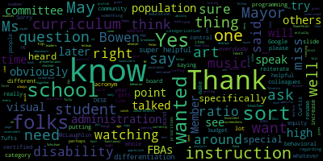

[Edouard-Vincent]: Hello, everyone.
[Mustone]: I'm not sure if someone can remove Declan's name. I, of course, can't figure it out. I was from a CCD class on Sunday morning.
[Edouard-Vincent]: The three dots, the three dots in the... I used to wear it doesn't say rename there.
[McLaughlin]: It doesn't say rename. I need to rename mine. I try to do it every time, but it's not until Peter or whoever's running the Zoom gives us co-host ability.
[Edouard-Vincent]: Okay, going through doing that right now. Okay.
[Lungo-Koehn]: Could somebody send me the agenda? I didn't see it on the school webpage calendar, please. If anybody has it handy. I'll send it. Thank you.
[Unidentified]: you Just waiting on member Hays, it looks like.
[Teixeira]: And just looking for Mr. Murphy.
[Schulman]: Can you make Dave a co-host?
[Mustone]: Just did.
[Schulman]: Oh, thanks. Brianna, I just sent it.
[Lungo-Koehn]: Got it. Thank you. We can start, because it is 6.04. And we're recording. Yep. Medford School Committee meeting for May 9. Please be advised that on Monday, May 9, 2022, at 6 PM, there will be a special school committee meeting held through remote participation. Zoom and the links there. You can also call in by dialing 929-205-6099. Enter meeting ID 975-5064-4749 when prompted. The meeting can be viewed on Community Media, Comcast Channel 15, and Verizon Channel 45. Additionally, questions or comments can be submitted during the meeting by emailing medfordsc at medford.k12.ma.us. Those submitting must include the following information, your first and last name, your Medford street address, your question or comment. The agenda will be as follows, presentation regarding the fiscal year 23 Medford public school operating budget focusing on strategic priorities concerning equitable supports for high needs, most vulnerable students, instructional technology, COVID-19 recovery, and organizational structure. Assistant superintendent of finance and operations, Mr. David Murphy, and we also have Dr. Marice Edouard-Vincent, superintendent of schools. Mr. Murphy, Dr. Marice Edouard-Vincent. Mayor. Member Rizzo.
[Ruseau]: Roll call. Roll call, please. I forgot my pad, so let me see if I can figure out the alphabet. Member Graham.
[Graham]: Here.
[Ruseau]: Member Hays. I believe Member Hays will be joining us shortly. She's having some technical difficulties. Oh, there she is. She's here. Sorry. Member Hays, are you able to chime in for roll call?
[Unidentified]: Oh, you don't. I can't do that.
[Ruseau]: Well, I see your name. I'll check it. Member Kreatz.
[Unidentified]: Yes.
[Ruseau]: Member McLaughlin.
[McLaughlin]: Yes, present.
[Ruseau]: Member Mustone.
[Mustone]: Here.
[Ruseau]: Member Sohir. Mayor Lungo-Kurt.
[Lungo-Koehn]: Present, seven, present, zero, absent. Dr. Marissa Edwards-Vinson.
[Edouard-Vincent]: Good afternoon or good evening, everyone. Today's going to be our kickoff for our official budget process. And we have a full agenda. A lot of information to share with the committee this evening. Mr. Murphy has spent a significant amount of time cataloging and organizing this data for tonight's presentation for the different departments. So we have a full schedule ahead of us so I look forward to tonight's presentation and passing the baton to Mr. Murphy so that he can take us through the slides and let us discuss the departments that are here today. And I thank our staff members that are on the call as well, who will have an opportunity to weigh in if necessary at particular points. So thank you. And Mr. Murphy, please take over.
[Murphy]: First of all, is everyone able to hear me? Can we do a straw poll? Thumbs up. Thank you. Great. And Dr. Cushing, I just shared with you a document that I could also share with Ms. Galusi as a backup plan, because I, like it sounds like a few of you, are having a few technical problems this evening that I don't expect they're going to be solved in the next few seconds. And so the deck that we're going to walk through tonight, if either Dr. Cushing or Ms. Galussi are able to share that, I just got the microphone and camera on one of my computers working. And so I don't think I'm going to continue to play with this to get to the point where I can also share my screen. That would seem too ambitious. I see Dr. Cushing's in the document. We should be good to go. So Peter, if I could just do a few more seconds of introduction and then we'll start going through the various slides that we have for you tonight. So as the, thank you. So as the superintendent said, tonight is our first formal budget meeting specific to the development of the FY23 budget. As the school committee is aware, We have been updating you first quarterly throughout the year, and then over the course of the last month or two, we've been discussing in greater detail both the budgetary priorities for the Medford Public Schools coming into FY23, as well as the budgetary challenges that we know we're going to face coming into this fiscal year. A lot of them, frankly, are similar to budgetary challenges that we would face in any fiscal year. very specific to FY23. As we discussed at your meeting on May 2nd, given that the district is currently in the midst of collective bargaining negotiations with nine of our 10 unions, and given that the vast majority of our operating budget is consumed by personnel costs, as is the case for all school districts, There is a, that is a significant variable and there's a significant degree of uncertainty that we as an organization have coming into this fiscal year. That being said, we have a responsibility both to continue to pursue our educational and operational objectives in the upcoming fiscal year And so we'll talk a little bit tonight about how those two things will interact with one another and how we'll try to adhere to our commitment to the community with respect to transparency and how we'll continue to put student interests and student outcomes at the center of all of our strategic priorities, including those that have a monetary impact. I will now, as we start to go through the slides, and I think we can go now, Peter, if you're ready, Whenever we talk about the budget, well, I know for some committee members and particularly for some of you that have been on the committee for some time, there can be some degree of repetition and redundancy. as you hear me walk through the various steps and sequences. But I think it was Ms. McLaughlin who pointed out, as we were sort of mapping out our FY23 budgetary timeline and process, that the budget really is an opportunity for members of the community to have an opportunity to see how the organization functions, to hear about what priorities we're pursuing. And so given that, I try to sort of provide a little bit of foundation knowledge at the beginning of the budgetary process, just in terms of how school districts are funded. I'll go through those as quickly as I can because, again, we have been discussing this on almost a weekly basis over the past month or two. But at the same time, I do think it's important context. So in our first substantive slide, you'll see a slightly modified version of a document that you saw last year that walks through the various steps. And that first step with regard to the strategic plan, is one that I think in any budget process, given how much we have going on, it can be easy to skip over, but it's important that we start with our goals and what the objectives are that we're looking to pursue. The members of the school committee, as well as members of the school administration filled out budget surveys in which essentially you had the opportunity to thinking in the context of the strategic plan, what are the issues and priorities that you believe the district needs to pursue? We're at that third step with regard to the budget meetings. That's where we are right now. This is our opportunity to, in public, flesh out those priorities and to talk a little bit about how they interact with one another. And really, one of the things that we'll talk about tonight is how we're in a very interesting budgetary time in which we have all the uncertainty and speculation that often comes in Massachusetts with school districts without knowing what the availability of funding is going to be. And at the same time, we've been fortunate enough, both on the municipal side and on the school side, through the ARPA and ESSER funding, to have a significant amount of one-time funding resources available. But some of the strategic considerations that we in the school administration have to take into account, and that you as the school committee have to take into account, is how do we balance those one-time funding priorities against the reoccurring priorities, and how do we determine, essentially, which budget those priorities land on? And we'll talk a little bit tonight about what the implications of those decisions are, what the risks are for potential deficits that we can't fund in the future, but then also what are the risks for immediate student needs that we know exist right now in the somewhat aftermath, or at least hopefully the later stages of the pandemic and the disruptions that it causes. These meetings lead up to the superintendent's recommendation I think oftentimes there's some confusion about that. There's an assumption that the municipal government sends over a number and the superintendent then puts it in an envelope and hands it over to the school committee and the school committee votes on that. And I think one of the points that this school committee has made, certainly in the time that I've been in this role and my impression is to some degree prior to that, is that part of the school committee's job and your responsibility is to advocate zealously on behalf of the school communities that we work with and that we serve. The municipal government we know, and this is true for the mayor and it's true for the city council, has that responsibility, but also the responsibility to balance the competing needs of the community. And we know that we as the school department try to be a good citizen within the constituency of municipal departments. And so one of the points that I always make at this point in the budget season, and I know you've heard me make it this year as well, is that as the school administration we understand our responsibility to be planning for all potential contingencies. The information and the priorities that you'll hear about tonight are important priorities based on facts and based on the actual truthful needs of our students. And at the same time, we understand that we are one constituent part of the city of Medford and we will be prepared to implement the budget that is appropriated to us. That is something you've heard me say almost verbatim each time we've talked about this. But this is an important step in that process of us making sure that we're able to articulate fully what are the needs of the school department and through that, the needs of the Medford Public School students. So the superintendent's recommendation will go to the school committee. The school committee will then make a request based on that recommendation or a variation as you see fit to the municipal government. The municipal government through the mayor and the city council will then make an appropriation. And then that second vote that you took on June 24 last year, for purposes of the FY 22 operating budget is to actually adopt the budget that is that is appropriated to your recall that you made a contingent vote. Last year the mayor had made a recommendation to the city council. It represented a significant increase in our funding. It was also about, I believe, $700,000 less than that was requested. That was something that we were planning for and As you've heard me say before that the school administration works in conjunction with the city administration to make sure again that we're prepared for any potential contingency. And then after that adoption after the appropriations made by the municipal council. It is our job to implement that budget so you'll see the note there that there are various components of the budget process and different levers of government that have a hand in it. It's a process that takes place. There's some variation depending on if it's a regional school committee or things of that nature, a city government versus a town government. But generally speaking, a process like this plays out in every city and town in Massachusetts throughout, right around this time during the fiscal year. Okay, that's it for our, sorry, one more slide. You've seen this one before. Again, our budget is made up in Medford of about 80% local contribution, that's money generated by the taxpayers of Medford, 20%, or thereabouts, Chapter 70, excuse me, Chapter 70, coming in from the Commonwealth, as we talked about a little bit at your May 2nd meeting, that is based on the belief that every taxpayer in the Commonwealth of Massachusetts has a vested interest in the well-being of the students of Medford, but the breakdown of the formula is based on the socioeconomic dynamics of the community, or so says the Massachusetts State Legislature. And as I said on May 2nd, I would recommend we table for the time being the degree to which we either agree or disagree with the specifics of that formula. Like many communities with a high degree of need, we would prefer not to have an 80-20 split, but at the same time, that is what the formula essentially spits out at us right now. And in this particular fiscal year in FY23, we're fortunate to, as many districts have received a significant uptick in our Chapter 70 allocation. But again, as I reported in our labor update, given the actual breakdown in the ratio of the funding that has not as consequential an effect as we would have preferred, perhaps if the numbers were a little different. You'll see that column on the far right there just representing the external funding that comes into the district. A large portion of that is in the special education realm. And we'll talk a little bit tonight about the fluctuation that we have to forecast for year in and year out. Okay, now I think we can move on. And again, I'll move quickly through this slide because it's one that you saw just a week ago. But in the context of trying to plan for a almost or perhaps over $70 million budget, when you have nine collective bargaining agreements that represent a very, very large portion of your budgetary expenses on a year in and year out basis. You can't really sort of escape that as an important factor in your budgetary planning. And that's something we obviously discussed at length last week and something that we'll continue to discuss as we move forward throughout this budget process. I just wanna make quick note of that third bullet point down. where it says that a priority for the Medford Public Schools is to increase wages to maintain competitiveness while ensuring sustainability. That is a point that you heard me articulate again in your May 2nd meeting, and I will articulate it again here. And it is certainly the case that it is a point that we in the administration have articulated in various forums with our various bargaining partners. We understand that we have a responsibility to maintain competitiveness. But that responsibility is qualified by the responsibility we have to not establish financial structural deficits that would cause significant problems for the school district and the years ahead. And so that is our job to find that equilibrium and to negotiate in good faith toward a result that achieves both ends of that objective. And that's something that will be a part of tonight's presentation, but also part of all of our efforts with respect to negotiations moving forward. If we can go to the next one. Okay, again, these are the priorities as summarized. And so as we walk through the specific priorities tonight and some of the initiatives that we'll be recommending that the school district fund through one means or another, All of them, frankly, should correlate with one or multiple bullet points here. And so, again, the reason that the negotiations are such an important component of the budgetary process is that we're an organization made up of people, and that's where most of our money goes. So of our $67 million budget, $67.4 million budget in FY22, 54.3, approximately was money that was put into personnel expenses. So that means that if we don't know how much the personnel is going to cost us in a given year, it can be very difficult to nail down our specific budgetary priorities that we'll be able to ultimately realize. But as I said, it's also important for us to continue to articulate those so that the community has a full understanding as to what exactly it is that we are looking to invest their money in, frankly. So again, your critical priorities there, and you'll see them in greater specificity tonight, are making sure that students have the social, emotional, and mental health supports that they need. To the degree we're able to reduce fee-based services, that's something that this committee has identified. as a critical priority, making sure that we're going through the responsible expansion of our CTE programming. That is a point that we'll be discussing in greater detail in tomorrow night's budget meeting. So I'll get into a little bit of the sort of various ways in which we've tried to organize the themes in a moment. But CTE, if you're tuning in solely to see Mr. Fallon, you'll need to set your VCR for tomorrow night because we're focusing on some of the other priorities this evening. On the personnel side again you've heard us, hopefully there's nothing here that is jumping out to anyone as a surprise. The reason that we update you on a quarterly basis. The reason why we solicit your feedback. The reason why we come before you to discuss these issues is so that both the members of the school committee and frankly for members of the community at large. there is a general awareness. We don't expect people to be able to detail every line item in the $67.4 million budget, but we hope that for people that are invested in the school system and paying attention to these conversations, there's a general understanding as to what it is that we're trying to do for the Medford Public Schools and maybe as importantly, why it is we think that that will have an impact on student outcomes. Okay, so I think we have one more slide of our high level priorities. And again, we'll be going through with some greater specificity tonight as to what are the priorities that we're connecting to each of these. And then, as I said, there'll be some that we'll talk a little bit more about tomorrow at the at the second budget meeting. So one of the changes that the school committee put in place the recommendation of the administration is that we're pursuing these meetings and having these discussions along thematic lines. And so, as the mayor said at the beginning of the meeting, the four themes that we had identified were, one, how are we investing to provide equitable supports, particularly for high need and most vulnerable student populations? Two, how are we recovering and continuing to mitigate the impact of the disruptions caused by the pandemic? Three, what are the technology investments that we're seeking to make, understanding the critical role that technology plays in our students instruction. And number four, how are we structured as an organization and how are we seeing some of the how some of these priorities and changes are affecting how we're organized and how we're pursuing that work. So tonight primarily will be on those first two objectives, talking about the bounce back from the pandemic and the supports to high needs students.
[Edouard-Vincent]: And
[Murphy]: Again, the sort of peculiar thing about budgeting in FY23 for school districts really across the country, and certainly in Massachusetts, is identifying how it is that we use the significant injection of federal money that has become available to us, but that we know is very time limited. And so one of the points that you heard me make a lot during last year's budget presentation was that we know we don't want to commit one-time financial resources to recurring expenses. However, we also know that some of our financial priorities may well be, or challenges may well be recurring, and the need is exacerbated by the challenges that our students have faced over the course of the past couple of years. And when that's the case, we have to balance that potential conflict against itself and make determinations as to what we should invest in now, understanding that one of sort of three scenarios could play out. the need could dissipate. And you'll hear a little bit about that tonight, particularly when Mr. Teixeira, our director of English learners joins us. Two, we could identify that something that we thought might be a one-time expenditure may well be very good for the mission of the organization. And therefore we have a responsibility to reprioritize internally so that we're able to continue that investment in perpetuity. Three, we could determine that the need is there, maybe not great enough to reprioritize the whole organization, but as revenue recovers, and that's a large portion of what particularly the ARPA funding is designed for, is that it is funding that contemplates the eventual return to normalcy, and therefore there's still reprioritization that needs to occur, but hopefully it's not as difficult a lift as it would be in the second scenario. Again, we'll talk a lot tonight about the one-time funds versus recurring and our attempt to be responsible in the allocation thereof. So we go to the next slide. And again, going into greater specificity, this is something every budget year, whether we have ESSER funding available or not, we walk through for the committee, the fixed cost increases. These numbers do fluctuate over the course of the budget season, but at least for the last week or two, we've been relatively stable Ms. Bowen, our Director of Pupil Services, who will also be addressing the committee tonight with regard to some of the special education funding priorities, and myself certainly hope that that will continue to be the case. But we also know that the costs are gonna fluctuate as do student needs, and it's our responsibility to strategize and make sure that we're being as responsive as we can. So I'll just spend a minute or two if we could on this slide, Frankly, the fixed cost recitation in each budget season is one of the ways that school administrators and I think oftentimes committee members find ourselves being reminded that we don't have as much flexibility as we might prefer, because being a budget that's largely driven by personnel costs and personnel costs that are largely driven by contractual agreements negotiated a long time ago, The result is that there's always a chunk of next year's budget that's already spoken for before anyone has the chance to develop any type of strategic priorities or deliberations or anything of the like. So that's the case here. We see that there's the first $1.1 million is spoken for. And then you see some other fixed costs that come in as well as special education, tuitions and transportation that are projections. And again, we know that there's extra funding that will alleviate some of that, but because those numbers are uncertain until we actually get into the fiscal year, this is essentially what we have to plan for. One of the numbers that's fluctuated a little bit, and I just want to point this out for purposes of transparency, because if you're someone who's doing school committee scouting and you're watching the highlight videos over and over and over again at night, if you compared what I said on April 11th to May 2nd to this evening, you would see that there's slightly different numbers associated with the investment that the district is making in the investigations three new math curriculum. And essentially the variable there is the personnel associated with the curriculum. So what the district has said in previous meetings is that the cost of this initiative is somewhere between 200 and $400,000 or thereabouts. But if we were to strip that down just to the fixed cost increase, this is the curriculum and professional development that come with that investment for the new elementary school math programming. In that row, that $150,000 does not include any personnel expenses, but as you've heard and as you'll hear again tonight, and Ms. Galussi can speak, and I think Dr. Khan may be on the call as well. She'll certainly be welcome to chime in. We think that to really make the most of this $150,000 investment, we're going to have to retain some personnel and devote FTEs to math coaches, which is something the district has not funded in recent years. And you'll remember in the FY22 deliberations, what we said was that we think math coaches are a good idea. There would be a sound investment taken in a vacuum. But in a world when we were transitioning out of a math program, We didn't think it made sense this year to invest in people coaching educators in that particular math program. But now that the district has after a pilot program that again, either Pfizer or Suzanne could speak to in greater detail, we feel very strongly and we're very hopeful about this investment, but we want to make sure that we're maximizing that investment. And then so that will require some degree of a personnel investment. And again, there's four elementary schools. So the sort of ceiling of that investment would be one coach per school. But that is part of the back and forth that we're anticipating over the course of this budget process. We want math coaches. It's just gonna be a capacity issue with respect to how many we ultimately invest in. I'm gonna take a breath for a second because the fixed costs themselves are a big bulk of this and something that I know there are often questions about It's, we're talking about $2.5 million of taxpayer dollars. So it's certainly understand if or why there might be some questions. And so I just, Mayor, if it's okay with you, I would, I thought maybe we could just see if anyone has any questions process related or otherwise so far, and then we will soldier on after we get to that point. It's also a good test to make sure everyone's awake. I also, it gives me an opportunity to thank Ms. Hines, our Director of Health Services for being present, as well as Ms. Schulman, our Director of Behavioral and Counseling Health. And I apologize to both Ms. Hines and Ms. Schulman that I wasn't able to more smoothly weave in your introductions as I did our other administrators, but I know they won't take any offense.
[Lungo-Koehn]: Great. Thank you, Mr. Murphy. I think that was very well said. And I know we've heard some of that multiple times, but it's good for everybody watching from home. to hear it again. If nobody has any questions, we can move on. I'm sure we're not opposed to continuing on and seeing how we get done.
[Murphy]: If you haven't even seen how many slides there are, so I would imagine you would not be opposed to moving on. And we'll move on as efficiently as we can. So as we move past the fixed cost increases, then now we get into, again, this is just the various components of the budget. And again, you did hear me make this point, it sort of can't be stressed enough that there is a significant increase in our foundation budget this year. Our local contribution has increased $2.2 million. Excuse me, our required local contribution has increased $2.2 million. Our chapter 70 number has increased 1.6. That's a $3.8 million increase. However, if you look at, I'm talking about the table on the right side
[DnBk5C8-dFs_SPEAKER_09]: of the screen. I don't know, Dr. Cushing, if you can scroll your pointer over it. There you go. Thank you.
[Murphy]: So you see there, our $3.8 million budget brings us up to a minimum budget of $64.9 million. That's a significant proportional increase and one that under other, oh, there you go. Thank you very much. That was an FY22 investment, that pointer that Dr. Cushing is using right now. Um, so, uh, that's, it's a significant increase. However, the sort of like full context of that increase is that, um, even taking that increase into account, our FY, uh, 22 budget is already significantly North of our required FY 23 budget. And so, um, we do think that that increase is reflective of the increased need that schools are experiencing. And that is part of our advocacy to the municipal government. that as costs go up and as needs go up, investment needs to as well. And at the same time, we recognize that this is evidence of Medford making an investment in education that our students are the beneficiaries of. And so I think it's worth pointing that out. And that's what that bottom table is. So you see on that bottom table on the right, the $69.9 million in the FY23 developing budget. When you hear me use the term developing budget, what I mean by that is that is the budget if the slideshow stopped right now. But we have several slides to go. And as you'll see, there are additional costs that need to be factored in or that the administration is recommending be factored in to the school committee's request to the municipal government. And so with that, we'll move on to the next slide. And so Again, we're at 67.4. If you factor in the FY23 fixed costs that have already been determined, we're at 69.9. That $71 million, which is an increase of $1.1 million, that represents if we were to incorporate a 2% cost of living adjustment. I'll go back to the point that we discussed on May 2nd, and that I referenced earlier tonight. The district recognizes the need to maintain competitiveness with regard to our wage increases. And we also understand the need for it to be responsible. Thank you, Dr. Edmunds. And so when we look at that, we factor in that 2% increase. I don't know ultimately what that budget line is going to represent. But the suggestion that the district is not in any way factoring in the need to maintain competitiveness is inaccurate. And that, well, sometimes, you know, we can make sort of determinations as to how, if, or when we want to emphasize that point, given this context, that is something that we wanted to make note. At the same time, as important as competitiveness is, so is sustainability. while there would be an obvious upside to having a disproportionate increase, and we would certainly model or market ourselves accordingly to prospective staff members. It's also the case that we know that our students are presenting with needs that will be discussed in greater detail by Ms. Shulman, Ms. Hines, and Ms. Bowen, and Mr. Cheshire, that require us to emphasize that sustainability at point so that we can maintain the flexibility we need to retain the staff that we need to provide the supports that our students need. And at the end of the day, there's no way of discussing our negotiations, our strategy, or our budget without understanding that that is the primary focus of the work we're trying to do. So what are our, so that, now that all that being said, while our flexibility is limited, it's not non-existent. And so if you look at slides five and six, you see the sort of broad high-level priorities. In a moment, you'll see them with greater specificity. And we also know that oftentimes, while there may be things that we would prefer to defer to succeeding fiscal years, the significance and the severity of the need that our students are experiencing, hopefully coming out of the pandemic period, those are things that can't wait. And that's when we have to make strategic decisions about the use of either recurring funds through the operating budget or the one-time funding that's available through the ESSER budget. The third bullet there with respect to fundamental issues of equity, frankly, that can have a fairly expansive definition. And you'll see some things here where we know that there are some student programs and initiatives that we need to lend additional support to both so that the students that are participating in those programs are experiencing equitable support, but also so that the programs themselves can be treated with equity in the hope of developing deeper student engagement and attracting more students to participate. And then again, that final bullet point is just something I've already discussed a little bit tonight about there's a lot of strategic decisions to be made with regard to what funding we use and for what. I've promised several times that we're going to get into greater specificity with regard to our priorities. We're going to start to do that now as we move to the next slide. And you'll see that we have categorized all of the priorities that we're talking about tonight as somewhere between A and F. But what I want to be very clear about is that A through F is not a hierarchy of prioritization. Something can be categorized as category B and still be just as much of a priority as category A. The category system that we're using for the discussion tonight is about the strategic determination that has to be made between whether to commit to the operating budget, to the ESSER budget, or to essentially make a, you know, or neither, frankly. So you'll see as we go through, and it may be the case that the committee feels that we need to recategorize some of these issues and some of these priorities, but I think at a minimum, you'll understand sort of the rationale behind what we put when. And so it's the next slide, it says this is just the definition of A through F. And again, I just want to reiterate again, because before we unveil a list of things that cost a significant amount of money, I just want to be very clear that if you pay attention to the categorization that we've used here, you'll see that the school district is not going to be making a request of $80 million. We're not, this is not a, a spending spree, but it is an honest look at the needs that our students are presenting with. And again, depending on whether they are reoccurring expenses or one-time expenses, or right now urgent expenses that we will have to determine in the future, whether they're recurring or one-time, that is sort of how we've tried to make this initial call between or amongst these six categories. And again, there are, for the most part, the ones that we're gonna focus on tonight and the ones that should be listed here are in, again, the theme for tonight is supporting, providing equitable supports to our high-need learners. And so when we talk about our most vulnerable populations, we're talking about special ed, we're talking about students who are English learners, and the mental health and counseling supports that Ms. Schulman department provides and the health services and medical attention that Ms. Hines department provides. And so as we get to those priorities, I'll ask each of them to elaborate and give the committee a bit of sort of an illustration as to how and why this funding would make a difference. That really will be the focus is those four areas. And then tomorrow evening, I believe Ms. Layden's on the call as well. And so there's some technology and library potential investments Um, that is certainly welcome to speak to. Um, but some of those other sort of, uh, structural components, uh, organization, um, number of strands, things of that nature, vocational programming. Um, that is something that we'll, we'll focus a little more on, uh, tomorrow evening, as well as, um, some, some of the other items on the operational side. Okay. So hopefully everyone's had a chance to look through this table and everyone understands that, uh, it's not a. Priority 1, 2, 3, 4, 5, 6, meaning if it's 6, we'll never do it. And if it's 1, we have to, or the world will end. And we'll go on now to the first set of those priorities. And again, the math coaches, both because of the instructional implications that we can, that we think it will yield for our students, as well as also wanting to make the most of the curriculum investment that we've already made. That's listed there again, this table itself does not represent a list of priorities. So please don't draw that inference from it. But you can see in category A there, we were in all likelihood, if the pandemic had never happened, the district's decision to invest in investigations three as its math curriculum, hard to prove a negative, but presumably that would be unaffected. And so in that case, uh, and we think it's a good practice to have math coaches provided, uh, properly trained. You've got a curriculum that they're coaching on, um, and that, that, that support is there. Um, and so we see that as, as really, um, one of our top operating budget expenses.
[DnBk5C8-dFs_SPEAKER_09]: I'm going to ask, uh, I'm going to ask us to share, uh, momentarily to speak to, um, our.
[Murphy]: English learner staffing priority. And I know there's actually another deck that he's going to be able to share with us for a minute to talk a little bit about that background. I know it's only the second row in this, but I promise we don't have separate decks for each of these priorities. I think this is the only instance in which we're going to do that. But the reason I want to stop here and give Mr. Teixeira a moment to expand upon why this is important is that the this priority, the need for additional English learner teachers at the elementary school to service our newcomer program is a really good example of something that if we didn't have the ESSER funding available, it would be a critical priority and we'd have to find a way to do it because it's responsive to an immediate need that we're seeing in our school communities. And it's a constituency of high need learners that we have a responsibility to position for success for the remainder of their academic careers. All that being said, there are reasons to think it will not be a challenge that will last in perpetuity. And it is a pronounced need that needs to be addressed right now. And therefore it is in category B, because if it doesn't make it into our operating budget, which frankly, given what you've seen about fixed costs, giving about some of the other uncertainties that we have coming into this budget, we're prepared for anything to not be able to make it. But we have to be particularly prepared for that, both because of this is a significant investment, and because it's so important. And so, assuming it doesn't make it into the operating budget, we're prepared to commit ESSER funding to that, so that we can achieve the objectives that Mr. Cheshire is now going to share with us. So, Paul, if you want to.
[Lungo-Koehn]: Yeah, if I just could ask a question, I don't know. Can you pull up that slide one more time? And I just wanted to know, I think you said those are all additional positions that it will be our hope to fund, correct?
[Murphy]: Well, if you look on the column on the far right, these are priorities that we think are worthy, at a minimum, worthy of consideration. Only those that are categorized as category A are ones that we're saying, one way or another, we should try to incorporate into the operating budget. If it's something that's category B, It means we have to do it, but we are prepared to commit the ESSER grants to make sure that it's done. And then it sort of, it winds its way down from there. Once we go through the priorities, I'll be able to spell out for the committee what this would translate in terms of dollars, depending on which set of categories we would incorporate into the request. But Mayor, I think you make a good point. And so I just want to say this again, I want to emphasize it for anyone who just tuning in, and seeing this long list of positions, it is not the case that the school department is expecting to add these positions in FY23. It is in all likelihood not the case that we will not even recommend that we add all of these positions in FY23, but there are positions in here that we need to take, we need to think through the implications of each of these, what we're able to do, what we're not able to do, and then what we're able to do using the one-time funding and the ESSER grants that's available to us.
[Lungo-Koehn]: but you including all of these numbers in that $71 million figure you gave a bit ago?
[Murphy]: In the $71 million, it represents just the fixed cost increases. There'll be a number at the end that is, I'll just to cut to the chase. If we just do the category A at 71.4, that would be the number if it's just category A. If it's category A and B, it goes up to approximately $72 million.
[DnBk5C8-dFs_SPEAKER_09]: But again, It is not our expectation that this would end up entirely within the operating budget.
[Murphy]: Okay, if we wanna, Dr. Grisham, we wanna go back to Paul, I think he's probably, is that a good jumping off point, Mr. Chair?
[Teixeira]: I'm ready to go. I can share my slides.
[DnBk5C8-dFs_SPEAKER_09]: Yes, you can. if Dr. Cushing has them. If he does like those.
[Teixeira]: Do you want to do this or you want me to show mine? If you can show yours, I don't think I have yours at my fingertips. Thank you. Good evening, everyone. Happy budget season. This is the chart that I give you pretty much every year when I give a presentation that discusses our enrollment numbers. And if you recall, our numbers are pretty fluid throughout the year. I always try to find that fixed moment in time that will indicate what our numbers are. These are the end of year numbers for going back to school year 17-18. So For example, in 1718, we ended the year with 460 students, but at some point during the year, we may have had 490 students because we have students coming in and we have students going out. This year, our current moment, at this moment in time, we're actually up to 577 students as of today, which is the highest number I've seen in Medford. The majority of these are our newcomer students. I mentioned this in, when I presented back in January, we had, I took member Ruseau and member Graham to, you know, different schools. And we went into one of the newcomer classrooms that only had six students and that classroom exploded. We currently have 38 students between two classes in that room right now. So our numbers have grown significantly, and the majority of these students are newcomers who require the highest level of services in terms of periods of ESL a day, and also this includes content classes, as well as their English language development classes. With that said, I predict that these numbers are going to continue to grow. We're still registering new students. We have 11 students on deck. And just in the time when I presented back in January, which was about 15 weeks ago, we've increased our numbers by 62 students. This is a result of the pandemic. The borders were closed last year. So we're basically getting two years worth of students in a one year period of time, but I don't, I wish I could predict when this would level off. One of the other struggles that we're having with our newcomer students, because they are coming in at all different times of the year, they will be newcomer students next year as well. So we are still going to continue to get new students as we do every year, but we will be keeping students in the newcomer classrooms longer than we typically would because we don't have the time with our students that we would have in a typical year. So that's why I expect this to continue on to next year. Does anyone have any questions on this slide before I move on? All right, does the screen change to kindergarten? Yes, okay. So one of the, starting with kindergarten, I'm trying to predict how many students were going to have a newcomers out of kindergarten. If you recall, we do not have a kindergarten newcomer program. It's best practice for our kindergarten students to be fully integrated in the mainstream, because most students are acquiring their English language development at that time. and to be in a classroom with role models, with native English speaking students, help accelerate the learning process and English language development of the students. This year, we have 86 EL students in our K classes. That number is, again, the highest I've seen in my time here in Medford. Of those 86 EL students, 44 of them are newcomers. How many of those newcomers are going to be recommended for first grade newcomers? I don't know yet. I won't know until June. But if I were to look at the percentages and the rates, if you go back to the 2018-2019 school year, we had 53 EL students in kindergarten. 21 of them were newcomers. Only two were referred to first grade newcomers because these students were here all year. We didn't have students missing huge chunks of school because of a pandemic. So, you know, those students became pullout students and only two needed newcomers. In the 2019-20 school year, that number increased. We only had 26 newcomer kindergarten students. but 11 were referred to newcomers because the building shut down in March. And March to June is a critical time for our kindergarten students with their language development. And then last year we had hybrid, we had students on remote learning, we referred nine students. That was out of only 15. We have three times that amount this year. I can safely say at this point in time, even though I can't predict, I am going to need another first grade newcomer classroom. So looking at our newcomer classes as of, I guess I made these slides on 425. These numbers have gone up, I can tell you that. We currently have 20, well, I know we have 25 in first grade now. I can't speak for the other classes off the top of my head. We split this grade two classroom and added another teacher this year, and they're each up to 18 students. Grade three, we have 21, grade four, we have 20, grade five, we have 18, and then six, seven, and eight, we have 20, 22, and 18. Again, I think a larger percentage of these students that would typically be reclassified as pullout students are going to remain in EL, and we're going to continue to get new students enrolling. And this is why I'm asking for four more teachers.
[Murphy]: Thank you, Paul. Before we transition back into the lengthier list are there any questions specific for Mr. to share that the committee would like to ask at this time.
[McLaughlin]: I just wanted to ensure for folks that we know that we'll get a copy of the PowerPoint presentations I know that we will but I just sort of wanted to put that out there.
[DnBk5C8-dFs_SPEAKER_09]: Thanks. I can confirm that you will.
[Unidentified]: Thank you.
[DnBk5C8-dFs_SPEAKER_09]: Okay, Dr. Krishnan, I think we were on slide 12 of the original deck.
[Murphy]: Thank you very much. Okay, again, so just, you may hear me reiterate this point a couple of times, but I think it's important that the list in front of you and then the next couple of slides do not represent a list of positions that the district expects that we will be adding in their entirety. It is an articulation, as we have done in the past, the global personnel needs that the school district has, which are reflective of the priorities that we need to advance. So that's why we think this is a good opportunity to go through that exercise and also to drill down on some of the specific needs related to those objectives that you saw earlier. And I'm just trying to find in this, hopefully Ms. Schulman's
[Graham]: Mayor, before we move on, can I just ask a quick question? Mr. Murphy, can you just flip back to the categorization slide for me real quick?
[Unidentified]: Yes. Thank you. Okay, thank you.
[Murphy]: Sure. So just on the question of those categories, again, the category A are the priorities that we believe, based on the nature of the expense, the appropriate place for the priority is in the operating budget. The category B is something that if there were no financial barriers, the operating budget would be an appropriate place. We recognize that there are financial barriers, that there are limitations, that there are competing needs within the city of Medford that need to be addressed by the municipal government. And therefore the district is identifying category B as a place in which we can say, we are planning to implement this because the ESSER funding is available. And in some cases, the ESSER funding may not be ideal but it's not as problematic because of the presumed time limited implications of the challenges. So there are some needs that could dissipate over time as opposed to cost of living adjustments or things that weigh down the wage scale, which we know are sort of the definition of recurring. And those are what can lead to unavoidable structural financial deficits, which is why, for purposes of the ESSER funding, which is the funding that is specific to the school department, those types of investments are prohibited under the federal regulations. and state guidance. Okay, so if we move on to the next slide and we'll go the fifth from the bottom, if we could highlight the three FTEs for school adjustment Councilors, we get our laser pointer back. Thank you, Dr. Cushing. And so you've heard the district present on several occasions over the course of the last year plus about the social and emotional needs of our students and how those challenges have been exacerbated by the pandemic and the disruption to their schooling experience. And so Ms. Schulman presented to the committee in early April about some of those needs that our students are facing and how our personnel is deployed in a way to be responsive to that. And so this priority is connected to our hope of investing in an appropriate number of personnel to increase our overall number of school adjustment Councilors. And so, Ms. Schulman, I'd ask you to speak a little bit to that priority and its implications. And just, I know you just did present to the committee just a few weeks ago, but maybe if you could just give sort of very brief primer on what is a school adjustment Councilor and how that compares to some of the other positions that are in your department.
[DnBk5C8-dFs_SPEAKER_09]: We could probably lose the slide while Ms. Schulman's speaking.
[Schulman]: Thank you, Mr. Murphy, and thank you for having me this evening to talk about the budget. Within the school counseling and behavioral health department, there are several different positions, and I'll just review them again so that there's more clarity on when I'm discussing the position titles, because they're very similar. School adjustment Councilors are also called school social workers, and those are Councilors who are managing the day-to-day individual and group counseling for students. They also work on FBAs, their community liaisons, and they provide consults to anyone in the school building and parents as well. School Councilors, who are also referred to as guidance Councilors, perform classes and lessons, both at the middle school and at the high school. They also provide individual group counseling, but they carry the bulk of the academic transition and post-secondary planning. They also coordinate our 504s. facilitate parent meetings and provide academic supports. Our school psychologists perform the psychological evaluations for special education and also provide counseling individual and group. We also have within our department for BCBAs board certified behavior analysts. They conduct observations and write support plans, consult with faculty and staff, provide trainings and conduct functional behavior assessments. Behavior specialists are also under this team. We have five district wide. They are all based on the elementary level. Prior to this year, we had one who was working with specialized programming. We have increased to five this year to mitigate some of the challenges from coming back in from the pandemic that we expected with students needing more supports with routines and classroom teachers meeting more assistance with behavior plans. There's also, as I've discussed earlier this year, obviously an increase in need for mental health for our students. This is not like breaking news. We've all seen it all over the place, certainly with adolescents, but also with our youngest learners, elementary students, children all over the place are experiencing more mental health challenges than ever before. And certainly there is a need to increase supports in our district to meet the level of care to provide to those students. We have seen over the course of this year an uptick in crisis management to include students having mobile crisis evaluations or being hospitalized for psychiatric emergencies. We've also seen students who just need more care coming into the building and support throughout the day. Mr. Murphy, it's okay with you. I'll go through the positions specifically or do you want me to wait for that?
[Murphy]: do school adjustment councils now, and then we'll talk a little bit about the career Councilor position after that.
[McLaughlin]: Excellent. Mayor, can I just ask a quick question?
[Lungo-Koehn]: Yes, Member McLaughlin.
[McLaughlin]: Thank you. Thank you, Ms. Schulman. I know you later said, initially in the opening, you talked about FBAs, and then later you mentioned functional behavior assessment. So just wanted to reiterate that those are one and the same. Yes. Did I understand you correctly that you said School adjustment Councilors do FBAs as well as BCBAs, the behavioral certified, you know, board certified behavioral analysts do FBAs as well.
[Schulman]: That's correct. Anyone within a school can provide a school-based functional behavior assessment. It is a little bit confusing because the way a BCBA would use a functional behavior assessment outside in a clinical setting is somewhat different in the sense those are only performed by behavior analysts. Within the school, we often include school adjustment Councilors, especially where there's a social-emotional need present.
[McLaughlin]: Thank you. And then I would just ask educators and the central administration leaders, folks, what have you, if we can try to just, thank you so much, that was helpful. And if we can just try to catch ourselves on the acronym so that we can maybe say them fully and then say the acronym too or whatever, just again, for the lay people out there, I know that when I first came on board, it was a lot of edgy speak. So thank you and appreciate it.
[Schulman]: Thank you. So through the analysis of looking at the services, both of what students were requiring and what the MASCA, which is the Massachusetts Association of School Counseling, is recommending for a ratio, I've determined that three additional school adjustment Councilors is necessary for next year. The first would be an additional school adjustment Councilor at the Brooks. The Brooks, as of a few weeks ago, their roster was 527 students. If we're increasing by 1.0 school adjustment Councilors, counting the school psychologist as a 0.5 Councilor, because she does do a lot of counseling as well as evaluations, this would lead us to a ratio of 210 to one for counseling. Considering their specialized programming needs, this seems like an appropriate ratio for that school building. The other priority here was to reduce the split positions. three additional elementary schools in our district, each of whom has a split school adjustment counseling position. The goal is to have our professionals remain in the building five days a week so that they are able to support students with continuous care. So that would mean the McGlynn Elementary would be moving from 1.4 school adjustment Councilors, I'm sorry, 1.6 to 2.0, so an increase of 0.4. The Missituk, which currently has 1.6 full-time equivalent school adjustment Councilors would be moving to 2.0. I'm sorry, they'll be moving to 3.0. Nope, 2.0. They have a school psychologist as well. So the Roberts, which has a 1.4 school adjustment counseling position would move to 2.0. And then we would be looking to increase the McGlynn Middle School to two full-time school adjustment Councilors. They currently have 1.4, which is the split position with the McGlynn Elementary. We wanna separate that so that they are responding to those buildings full-time. I will also say that not included in the budget is a DPH grant funded school adjustment Councilor for the high school level. We had originally written that grant for a community-based Councilor That was really difficult to fill and DPH has understood the challenges with supporting that grant this year and has allowed us to spill funding over for next year. So we'll be looking to fill that position for the high school level for another adjustment Councilor there.
[Murphy]: Stacey, if I could just jump in really quick to say that there's a little bit of an inconsistency with regard to how we're talking about some of the grants and the reason for that it's intentional, but I just want to call the committee's attention to it. So as Ms. Schulman just said, there's a DPH grant that's going to position us to have an additional adjustment Councilor at the high school. You see, or you saw on that slide, you saw a moment ago that this whole priority is category B, which means that while we're prepared to implement any contingency based on the appropriation, and we see that say that over and over again as well, in the event that this is not something that we're able to incorporate into the operating budget based on our desire to be as responsive as possible to the SEL and mental health challenges that our students are experiencing, we will prioritize this in the formation of our ESSER budget in FY23. And again, Ms. Schulman spoke about the ratios and certainly we want to make sure that we're adhering to all best practices, but that gives us, essentially time as an organization to determine whether or not we're seeing a lessening of that need, which frankly would be great, but not something that any of us are counting on in the short term. Or it gives us the opportunity to look in subsequent fiscal years about how we might be able to prioritize in a way that would allow us to migrate this priority from the RSR budget to the operating budget when there's capacity. But it's, so we want to, we're talking about them because, As was the case last year, we wanna make sure that the community understands both what our priorities are and how we're going to go about pursuing them. But it's also the case that we need to sort of be nimble between the operating budget and the ESSER budget available funds.
[Unidentified]: Mayor, may I ask a question?
[Lungo-Koehn]: Member McLaughlin.
[McLaughlin]: Thank you. And did I miss the ratio and the Andrews and the full ratio for the high school and the vocational school, or are you just still getting there? Ms. Holman, I wanted to just make sure we didn't miss that. Did I miss that?
[Schulman]: No, I'm happy to review that with you as well. Just give me one second here. I want to pull up the numbers.
[Murphy]: And just to be clear, as Ms. Schallman finds those numbers, presently, when we factor in the DPH grant funded position at the high school, it will not require additional investment either from operating or S or side in order for us to fulfill those, what are our objectives as of right now, at least. And Ms. Schallman, I can't speak to whether or not we're in keeping with the ratios you were referring to a moment ago, As of right now, that's not identified as an FY23 priority.
[McLaughlin]: And can I just ask, Mayor, is the DPH grant, is there a term on that, or is it just for the one year?
[DnBk5C8-dFs_SPEAKER_09]: I'd have to defer to either Ms. Scholz or Ms. Hines, who are more familiar with that particular grant.
[Schulman]: My understanding is it runs through the end of next year.
[Unidentified]: Ms. Hines just confirmed, thank you.
[DnBk5C8-dFs_SPEAKER_09]: Okay, do we, Stacey, did you have anything else on that? Or did you want to talk a little bit about the career counseling position?
[Unidentified]: You're on mute. Ms. Schallman, you're on mute. You're just on mute.
[Schulman]: Sorry about that. Thank you. I would love to move on to the career counseling position if we're amenable to that.
[Murphy]: Sure. So I just want to point out again, in the slide, you see that the, The school adjustment Councilors right now are categorized as category B, meaning that we understand that we may not have the budgetary capacity for that, but it's something that we need to do to address the immediate needs of our students.
[Lungo-Koehn]: The career Councilor- Is there supposed to be a slide? Yeah, we're not looking at, we're not seeing a slide.
[Murphy]: Right, it's the same slide that we were referring to when we went to Ms. Shulman. So again, thank you, Peter. That's category B, meaning we're going to plan to do that and understand that we may have to resort to the ESSER funding to do it. Category D, which is the career Councilor position, that is a position that we think it would be a good practice to have. And it will just be a question as to whether or not we have the budgetary capacity to do that. It may well be something that the committee determines we want to include in the request. It may be the case that we don't have the capacity to address it, or at least the immediate, may not be immediately apparent how we're going to address it, depending on the appropriation. And that will be something that we'll have to work internally to make sure that we're able to realize the funding to do, or else we'll need to plan in the future. So Ms. Stroman can talk a little bit about, with that context, Stacy, if you could just talk a little bit about what this position is, when it previously existed, and what it would position the department to do.
[Schulman]: Thank you very much. A role shift in this year, school year 21-22 transformed the previous school community Councilor position to a house Councilor at the high school. And this was for a very significant reason in terms to have two school Councilors per house and not to have that divided counseling split. Also the efforts of the school community Councilor were somewhat halted due to the pandemic and what students were able to experience or be involved in at the time. I would like to restore that position. And the reason why is that it includes the following responsibilities. Now that students are out and about going back to more activities through the pandemic, there is a need for someone to be coordinating some of these events, which include managing our community service programs for all students, tracking their 60-hour graduation requirements, maintaining developing relationships with surrounding organizations for student community service opportunities. As you can imagine, a lot of our students need support in terms of finding those opportunities within our community. Also coordinating college rep visits. Those had obviously been stopped for a period of time and we need those to resume again with vigor next year. Supporting students finding employment opportunities, assisting with a local job fair, and managing our dual enrollment programs, which we have partnerships with Ben Franklin and Bunker Hill. We have been in discussions with Bunker Hill to increase our dual enrollment program, which would require an advisor to oversee these students. We are looking to have this opportunity for at least 30 of our students. to have increased dual enrollment opportunities with Bunker Hill. There's also a need to connect more of our students with just the community at large and to assist in finding them with low or no cost ways to be involved in the community. And previously this position had been very adept at doing that. Certainly when it comes to extracurricular and scholarship opportunities, They require an application process, which sometimes we are assisting with, and that person would help to do that. Oftentimes people come to us as well to say, I'd like to start up a scholarship for your school, and it helps to have a coordinator who can walk them through that process. as well as coordinating the scholarship programs for local scholarships that require our assistance, specifically the Connors and the Posse scholarship. This person would also assist with school counseling workshops, creating and delivering advisory topics, scheduling and coordination of a caseload for students who need more support in managing their secondary education. and assisting with AP exams, AP potential, and in-school PSATs, which are now offered to all sophomores and juniors.
[DnBk5C8-dFs_SPEAKER_09]: Thank you. Thank you, Ms. Shulman.
[Murphy]: If the committee is ready, I think we can just keep moving through this again. I just, I don't want to spend- I think I have a question for Ms.
[Lungo-Koehn]: Hayes with her hand up. I'm sorry, just member Hays.
[Murphy]: If we don't need this slide I would recommend we take it down because it's, we've only, it's easier to tell if anyone's look for us.
[Hays]: Hi, I apologize I actually had a question on the previous, I was just trying to I was trying to keep up with the school adjustment Councilors. Did we talk about Andrews? I know you talked about the Brooks and I didn't actually get what the increase from what to what that was when you went through the other schools. I was wondering if you could go through that.
[Schulman]: Are we adding anything to Andrews? This year we added an additional school adjustment counseling position to the Andrews. At this time they're very well staffed. Okay, what do they have total at this point? Two school adjustment Councilors, one school psychologist, and two school Councilors.
[Hays]: Okay, and then the Brooks, can you just go back again? I know you said you were adding one. So what will that bring them from what to what?
[Schulman]: They currently have one school adjustment Councilor, one school psychologist. I'd like to increase that to two school adjustment Councilors and one psychologist. And that, again, is because... Because they have a large population of students, as well as significant need. When I looked at what the counseling services were, they were robust at that school for a counseling caseload.
[Hays]: Okay. So even compared... I mean, I know the McGlynn is actually the largest school in the district, correct, elementary-wise, so even comparatively... Are they ending up with, I'm sorry. Are they ending up with, so everyone's going to be bumped up basically to 2.0, it looks like. The elementary.
[Schulman]: Yes. Got it. Yes. The goal is to have two adjustment Councilors. Yes.
[Hays]: Okay. Thank you very much.
[Schulman]: You're welcome.
[Murphy]: I just want to be clear. Ms. Schulman stated that we added the position to the Andrews. That was an FY22 investment. So the FY23 is stable. at Andrews and staying consistent with its FY22 numbers.
[DnBk5C8-dFs_SPEAKER_09]: Okay. Any other?
[Lungo-Koehn]: Sorry, didn't see it. Member Graham.
[Graham]: Can I just ask a quick question. In past member Hays question just made me think about one of the things in prior budget books that would be helpful grounding for us all which is the population of students at each school because I It's not my recollection that the McGlynn is the biggest elementary school in the district. And then I found myself sort of thinking like, do I have that number? Can I shuffle through my papers and find it? So I think that would be helpful to make sure we're all operating with the same enrollment set.
[DnBk5C8-dFs_SPEAKER_09]: That will be in the budget books.
[Graham]: And Ms. Galussi, can you Do you have any like brief rundown of the size of the different schools at the elementary level?
[Galusi]: In regards to student enrollment? Yes, well, the two highest student enrollment schools are the Brooks and the Roberts. They both are around 520 to 540. The McGlynn would be next in line. They are, I believe, at about 480, but I would have to double check that number. And the Missituk is a little closer to 425. Again, I would have to double check those numbers, but that's just the broad range of the four enrollments for the schools.
[Unidentified]: Thank you.
[Lungo-Koehn]: Member Graham. Member McLaughlin.
[McLaughlin]: Member McLaughlin, thank you. Yes, and I also just want to know, and I know my colleagues know this, but also for those who are watching that, you know, that there's also this ratio of, there's numbers, but there's also a ratio of Most vulnerable student population right so if we're talking about specific staffing it's not as we've said so many times before right equity is not that everybody gets the same equity is that everybody gets what they need. So just again, I just want to make sure that we're saying that there's nuances in the population, so even though. at face value, it might be, oh, this school has more, or that school has less, or any of those things, that there are different populations at each of the schools as well, as we know. And I know that as Mr. Teixeira was just saying a little while ago, and obviously I know that we as a committee are, and as central administration and other administrations are aware of that, but I'm not sure that the community as a whole is. So I just wanted to point that out too. Thank you.
[Unidentified]: Thank you. Mayor. Member Graham.
[Graham]: Thank you. I do think that is a really excellent point from Member McLaughlin and hoping that in the budget books, we can also, to some degree, describe some of the special ed and language-based classrooms that are happening in our barrack, because all the schools have different programming. they do have different needs. I think it's really important to be able to describe what happens in each building in a substantive way, even though that in itself is not gonna like paint the perfect picture of like who needs what, when, but I think just some commitment to like telling us like from a staffing perspective, what's going on in each building and what the student populations that we support there are, I think would be important. So if we could just make sure that's in the final budget book, that would be great.
[McLaughlin]: Thank you. Mayor, may I also just add to that? Sorry.
[Lungo-Koehn]: Yes. Yes, Member Mugla. Thank you.
[McLaughlin]: And I just want to point out to folks again who are watching, and I know Mike, the committee, fellow committee members and others in the field know this, but this can also be checked on Google. If you just do Google school district profile Medford, know, Mass, DESE, and it will come up for each of the schools. There's a whole breakdown, there's visuals, there's all sorts of things that are super helpful. So I would also just ask, and I'm happy to do screenshots if it helps, and send it to folks that are putting the budget book together, Dave, if it saves time or whatever. But I, as you know, I think we've talked about this before, visuals are always super helpful to me too. So there's a really great visual on the DESE cover page for each of the you know, I know you know that the graphic would be super helpful if you wouldn't mind incorporating that with the with the brief narrative. I think that's helpful for others as well. Thank you.
[Murphy]: I agree. I think that the specialized programming at each school community speaks both to how the school budgets are sort of come to life on a daily basis, but also with respect to the identity of that school community. And so I think to the point that we discussed earlier that the budget is an opportunity for the community to get a peek inside the schools and understand how we're functioning as an organization. I think these would be critical pieces of information that we'd want to include. So thank you to both members for that. Okay.
[DnBk5C8-dFs_SPEAKER_09]: I think we're ready to go back to that slide and then, or a slide. Thank you.
[Murphy]: And so again, just going back to our categories that we've spent some time on tonight, I'm going to ask Ms. Hines to discuss a little bit about the personnel needs of the Health Services Department. Now, the Health Services Department is a department that has grown in size considerably over the past two years for, I imagine, somewhat obvious reasons that has been made possible through the ESSER funding. It is a sort of determination we have to make now that we know that in some cases what we prioritize in health services during the pandemic out of necessity may well prove to be best practices that we want to pursue post pandemic. On the other hand, we know that we as a district take great pride in the fact that we're very well staffed from a nursing perspective with two nurses per school. However, there is an exception to that in our alternative high school program at the Curtis Tufts High School. Currently, we fund only a .6 and that frankly was .6 more than we did prior to FY 22. So that is one of a few staffing priorities that Ms. Hines will speak to. And again, bearing in mind that while tonight's an opportunity to articulate in totality, the priorities and objectives, there will be some decision making that needs to occur in the coming weeks with regard to the categorizing of the various priorities that we're discussing tonight. So, for miscience priorities, because there's, I believe they're separated out into two slides. I'm just going to point them out now. The fifth row down in the slide that's on your screen. We can go back to our laser pointer. There we go. And then if we go to the next slide, you'll see that there are a couple of other health services related priorities.
[DnBk5C8-dFs_SPEAKER_09]: There's the, right.
[Murphy]: So there, so it's essentially Ms. Hines I think can take it from there. There's three staffing priorities. They're in different categories. And we thank Ms. Hines for the opportunity to advance next slide and I think probably give the floor to Ms. Hines.
[Hines]: Thank you. Yes, I'll take it from here. So currently we have 14.6 full-time nurses staffed, building-based, and then we also have our three float nurses through the ESSER funding. So we have a total of 17.6 nurses. That .6 position is at the Curtis Tufts and The last, I think the last time it was proposed to have a 1.0 full-time was in the 2018-2019. Tony Wright proposed a full-time nurse over at the Curtis. At that point, the proposal was based off of 117 visits to nursing at the Curtis-Tufts that school year. In the same timeframe of this year, the nurse that is there three days out of the week has seen 578 visits this year. So that's quite the increase. I know that a lot of it could be considered situational due to COVID. Looking at the visits that she is experiencing over there, it is a lot of non-COVID related visits. We have a few chronic health conditions that she's certainly seeing a lot of. And I think to To talk about equity is every student deserves a nurse every day emergencies could happen at any time and I think it's an important thing to think about is not just, you know how many students are on the roster over there, but to provide them the same services that we're providing every other student. And also when we're thinking about nursing services, we can't necessarily think about numbers. There are recommended numbers from the National Association of School Nurses for how many are nurses to how many students, but you also have to think about acuity. One student, if they're significantly medically complex, could take up one nurse's full day. So there are some things to think about, especially the way that Curtis operates. a new student could start there any day. And when that student needs nursing services, we, you know, we fumble to try to figure out how to fill it because we don't have that 1.0 scheduled right now. So it's a lot of maybe I go, maybe, you know, we get a call that there's an emergency and the closest nurse that is available gets in her car and goes, which is not fair to the school she's leaving. And it's not fair to the students at the Curtis. So that would be the reason why we are asking for a 1.0 nurse over at the Curtis. The other position that we would like to have considered is a registration nurse. So when students are registering for school, they have medical requirements that they need to meet. It's a Massachusetts law that they meet those prior to beginning. We are noticing, to go back to Mr. Taxera's previous presentation, a lot of the students coming in from other countries have a lot more need in coming to school and being able to start. They don't get similar immunizations, in infancy and childhood that we require to start. There's a lot of care coordination that goes with that. They typically need several doctor's visits. They need to be set up with a doctor. They need to be set up with health insurance. And if they are afraid to get health insurance or they don't want to, then we have to find free resources for them just for them to be able to start school. Many of these students have chronic health conditions that we also need to coordinate care for, for when they start school, just getting them into school you know, as much as it's important, we want them to start school early and not be waiting on a TB test. We also need to know that they're safe in school and we've set them up with a doctor that can fill that EpiPen prescription or can follow their asthma care because you need to be healthy to be educated and educated to be healthy. So that would kind of be the role that this person would fill. And then the retention of a 1.0 float nurse. With COVID, as much as we can say, we're certainly out of the brunt of it, but we are still feeling the effects in the health services department. We are still testing. We are still getting students coming in with symptoms. There are still vaccinations to track, and there are still significant duties that are COVID related, including students who have previously had COVID that are now experiencing chronic health conditions because of their previous COVID diagnosis. There's a lot of care coordination that goes into that. We have some students with new onset diabetes, new onset seizure disorders, and a lot of hands-on nursing care goes into those students, and it is because of their previous diagnosis of COVID. So those are the three positions that we are asking for in the health services department.
[Murphy]: Thank you, Ms. Hinds. And so, again, just to go back.
[McLaughlin]: Can I have a question? Actually, sorry. May I have a question if no one else does? Sure. Member McLaughlin. Thank you. Because what was the category for the Curtis-Tufts? Because we're on a different slide, so I can see the categories for the registration and the float, which are E and B. What was the category?
[Murphy]: Category D, Ms. McLaughlin.
[McLaughlin]: D for the Curtis-Tufts nurse. OK. Thank you.
[Murphy]: Which is, and just to be clear, it's a addition of a 0.4. So it's not, the budgetary impact is not a full, we're estimating this year $70,000 per FTE budgetary impact. It's a slight increase from last year, reflective of the projected increases. And so the, we have a good, it's the health services requests here are reflective of our categorization process with the Curtis Tufts, $28,000 impact being Category D, meaning it is a priority, but it would be most appropriate for the operating budget if it were to be funded. The COVID-related floating nurse related to the fact that, as Ms. Hines said, health services more than any other group is still addressing the pandemic-related challenges, and so that would be ESSER funded, were it not for the, frankly, that is listed as Category B, and I think Retrospect probably should be category C. So it would not be on the operating budget, but would be on the ESSER budget. And then category E is something that we believe is worthy of consideration. And that's why we're referencing it publicly. At the same time, there are some additional internal deliberations that we have to go through before that were to make it into a final recommendation to the committee, which is something that Avery and I have discussed. Okay, so thank you, Ms. Hines. Any other, if there are no other health service-related questions, Ms. Hines has logged a lot of time at school community meetings over the course of the last two years.
[Unidentified]: So if there's anything else for Avery, it would be great to ask it now. I see one hand. I don't know, Melanie, is your hand up from the previous question there?
[Murphy]: Okay. So you're good. Thank you. Okay, great. So then we have the only other immediate specific personnel issue, if we could just go back to the previous slide, slide 12, Peter, if maybe we're already there. And I know Ms. Bowen is prepared to speak a little tonight about the, you know, when we talk about special ed, funding priorities coming into a new fiscal year. It's always the case that the fixed costs associated with specialized transportation and tuitions are going to make up a significant bulk of the potential increase, but we do have a specific personnel-related priority with an underlying rationale that I was going to ask Ms. Bowen to expand upon briefly, and then we'll move through the remainder of the priorities.
[Joan Bowen]: Thank you, Mr. Murphy. So tonight I'm here to discuss with you the additional high school special education position. We are asking for this additional position to meet the needs of our increasing population of students with disabilities. We looked at, we reviewed the current programming and offerings for our special education students that are offered during this school year 21-22. We also compared this information with course recommendations for each student and also the recommendations for their specialized services that were identified on their IEPs, which is their individualized education plans. Taking that into consideration, we also need to make sure that students are receiving all of their specialized services and meeting graduation requirements for all of their academic classes. We reviewed the enrollment and the special education class size for the 22-23 school year and determine how many sections are required based on IEP needs. We also, some of the significant factors that contribute to the need of the additional special education teacher is we are seeing a significant increase in the educational needs of students with disabilities who are requiring more subseparate programming. So that means students who require placement in one of our programs such as the therapeutic learning program or a learning group program. We've actually, the teacher would be used or employed as a fourth TLP teacher. And another reason for this request is that we've also seen an increase in enrollment for our rising grade nine students. Currently our enrollment for grade nine students with disabilities is a total of 61 students. And the anticipated enrollment for rising grade nine students with disabilities for next school year is 80. So just to give you an example, in the 2021-22 school year, there were seven students that required TLP English, which is our therapeutic learning program. And it is being projected that during the 22-23 school year, that 12 students will require it. In special education, we have limitations on how many students we can have in a classroom with teachers and with paraprofessionals. So one section of the English was offered this year. With 12 students, we would require an additional section. And this would also be the case for the other subjects such as math, English, Science, and Social Studies. And that's our justification for the request for an additional special education person at the high school.
[DnBk5C8-dFs_SPEAKER_09]: Thank you, Ms. Fong. Do we have any specific questions for Joan that we might want to tackle at this moment?
[McLaughlin]: Yes, please.
[Lungo-Koehn]: Member McLaughlin?
[McLaughlin]: Thank you. And so thank you, Miss Bowen. And can you speak to why you're seeing an increase in subseparate programming at the high school level?
[Joan Bowen]: So it's subseparate in a therapeutic interventions. We're seeing students with increased anxiety, school phobia. that are requiring a more substantial setting to meet their therapeutic needs. So they need a smaller classroom, a smaller teacher to student ratio. They also need the, there's the social emotional component to it with counseling that we're seeing an increased need for throughout the district, but especially at the high school level this year, this coming school year.
[McLaughlin]: Thank you, and the categorization is A, not under ESSER, is that right? Because is that not COVID related for the increase in the SEL? Or I'm just curious about the categorization.
[Murphy]: That's a really good question, Ms. McLaughlin. This is an instance in which, because it is staffing reflective of our priorities with regard to special education and making sure that we're staffed in a way that continues to meet our obligation to provide a least restrictive environment, learning environments for students that yes, if it were to somehow not make it into the operating budget, we would, I'm not going to use the word exploit, but capitalize on the relatively broad eligibility criteria in the ESSER budget. But it's being categorized as category A is a reflection of the degree to which that doing this is a priority that transcends the COVID-related period. And so while I did say that this is not a hierarchy of prioritization, which is true because there's overlap within the categories, it's also true that the category A of which is the most limited group, you know, list of things, they are the most critical priorities in the sense that we, one way or another, we have to do them. And we don't think it's as appropriate to use the COVID-related funding because the priority extends beyond that.
[DnBk5C8-dFs_SPEAKER_09]: Does that make sense?
[Unidentified]: Yes, thank you.
[Murphy]: The categories, I would acknowledge, I would concede that the categorizing of some of these priorities is more of an art than a science. But that's really reflective of how the criteria for ESSER eligibility is drafted. And there's a good example of that. If we could go to the next slide in slide 13. I keep looking at my computer. It doesn't work. I apologize. Somewhere in here is refurbishment of, oh, no, I don't think we've gotten there yet. When we get to refurbishment of the locker rooms, I'll touch upon that point. Um, any other questions, uh, for miss, uh, for miss Bowen or any special education related.
[McLaughlin]: And I just, may I am there one other thing?
[Lungo-Koehn]: Yes, of course.
[McLaughlin]: Just want to reiterate again for, you know, folks watching, I know there are some folks watching that are concerned. These are, these are the, uh, top priorities that we're sort of going through now. Not obviously the entire sort of department thing. So just again, for folks who I think are worried about some other things that they wanna know about specifically regarding special education, these are primarily the priorities, as it says on the top of the slide.
[Murphy]: Thank you. Thank you, Ms. McLaughlin. Priorities and also reflective of potential either significant strategic priorities that we think require sort of extra special attention to in public discussion of, but also largely changes from FY22 over to FY23. And again, as you know, we'll be talking a little bit tomorrow night and again next week. And so if there are specific items that community members are concerned about, I would encourage you to relay those to committee members so that we can make sure that either we can answer the question offline, if that's appropriate, or use some of the time tomorrow or next week to give each item. Unfortunately, in a 67 to $70 million budget, we can't frankly highlight every single line, but that's not necessarily an indication of things important or anything along those lines. So we want to make sure that we're being clear about that and answering as many questions as we can. I think then we'd be ready to go on to, it looks like slide 14. in which we move away from some of the personnel related items. And again, to the point that was made, getting a personnel driven budget, that's why there's so much uncertainty and all these categories could shift and the district administration has to be prepared to implement whatever budget is ultimately appropriated and we'll do that. And we're always planning to make sure that we're prepared to do that. but you can see that the budgetary impact when we move away from some of the personnel related objectives is significantly reduced. And so I think Ms. Layden is still on the call and we're gonna really talk more about some of the technology pieces tomorrow, but she's here now. And so Molly, if you wanted to touch upon, actually the first one might be, I actually can't remember if this was a john priority or molly priority but if either miss ball enormously and wants to speak to the iPad. And I guess it's, excuse me, john and to do you want to talk a little bit about the iPad investment and the, and the assistive technology piece.
[Joan Bowen]: Sure. So, the assistive technology for. People who are here on the call, assistive technology in the classroom just helps to ensure students with disabilities that they have the same opportunity for education as students who do not. So during the school year, the 21-22 school year, we've seen an increase in the need for assistive technology for our students with disabilities. And the assistive technology is needed to meet the individual needs of students with disabilities enrolled in both in-district and out-of-district programming. So some of the examples of the assistive technology, as you can see on the list, is iPads. And we use iPads as communication devices for students throughout the district, as well as our out-of-district students. We use these for communication, and we have specific applications that we download on the iPads for the students. And it could be communication apps such as TouchChat or Proloquo. And both of these apps assist students in communicating either through touching a picture, and it'll read it out loud to them, but we also, need to make sure that we have the appropriate cases for the iPads, any additional chargers and warranties and things like that. So we will be using these for communication devices for our students throughout the district.
[Murphy]: Thank you, Ms. Bowen. Okay. I was faking the first time I asked, but now I really mean it. Are there any other questions for Ms. Bowen before we move on from the special education area?
[McLaughlin]: May I, Mayor?
[Lungo-Koehn]: Yes. Sorry, I'm not able to see you, but go ahead, Member McLaughlin.
[McLaughlin]: Just when you said before we move on from the special education, the next line item is the disability awareness training. So, and that looks like it's a high priority. No, I just wanted to confirm that folks know what that is. And I don't know if Ms. Bowen needs to speak to it, but I knew it was the next line item. So I didn't want to move on until, or if she has a chance to talk about that, if folks wanted to.
[Joan Bowen]: Mr. Murphy, do you want me to speak to that?
[Murphy]: I would love, it's an important initiative, so I would love for you to speak to that as well.
[Joan Bowen]: Sure, so we have I think it was two years ago, maybe a few years ago we started a disability awareness workshop in the district. It was offered to all staff, administration, but we'd like to take it to the next level to continue our disability awareness training in the district, to have either hire an outside consultant to assist us with this or to continue to continue the work that we're currently doing with in district staff. This is just to assist staff members with, you know, proper vocabulary and usage when we're talking about students with disabilities, but also how do we provide them with what they, you know, the difference between accommodations and modifications, and just making sure that everyone is truly aware of disabilities, how that impacts students, and how we can meet their needs within the district.
[McLaughlin]: And just point of information, I'm assuming also differentiated curriculum, that sort of initiatives that was also discussed around some of the disability awareness material, is that curriculum piece folded into this or not?
[Joan Bowen]: I believe it's separate. The disability curriculum is separate.
[McLaughlin]: Thank you. You're welcome.
[Murphy]: Thanks, Jen. Okay, again, I have seen very few Brady Bunch Squares right now, but if Ms. Layden is still on the call and would like to speak a little to some of the other technology priorities, including classroom projectors, our robotics and coding supplies, and our potential, and I'll, while we determine if Ms. Layden is here and make sure she's able to speak, I'll just- I am still here. Oh, great. Thank you, Ms. Layden. Makerspace initiative is another piece that, again, I think we have a responsibility to capitalize on the relatively broad criteria for one-time related expenses that ESSER is a potential funding source for. And so potentially looking at each of our elementary school libraries as a possible venue for makerspace areas is something that was identified by the technology department. And while it wouldn't necessarily be something that we ultimately would recommend being incorporated into the operating budget, we do think that it speaks to the district's responsibility for providing greater engagement opportunities amongst all learners and the heightened priority of that in the post-pandemic world. It's a little more sort of, I was about to say earlier, a little bit more of a literal connection when we talk about refurbishment of some of the locker room space, in that we have locker room spaces that were used for storage during the pandemic. And so the sort of tag, the DESI tagline of, that Ms. Kingdon from my office can remind me the specifics of, but the repair, respond, or it's not refurbished, but it's another R word. And the refurbishment, while we think it is a district priority, and perhaps it would have been something that we would have prioritized irrespective of the pandemic, given the funding available, we're hopeful that we'll be able to invest a modest, and just to be clear, it will be a modest investment in refurbishment. This is not some of the more imaginative and visionary priorities that have been discussed in the past, but a modest refurbishment to bring back our locker rooms to a more presentable, or more presentable landscape now that we don't need to be storing significant amounts of medical supplies in them. So it's modest both for a variety of reasons in terms of where it is in the priority list, but also everyone knows sort of the beginning stages of long-term planning for the flagship facility that we've started over the past month or so. It is not the case that we're going to be looking at a wholesale rehabilitation of the locker room spaces. That will not be a recommendation that will be forthcoming, but a modest investment in refurbishment we think is a potential eligible expense. But so that is a sort of, again, a more literal response to the pandemic. And Ms. Slater, if you want to just speak a little bit about some of our technology-related objectives. in terms of projectors, supplies, and maker spaces. That's also certainly very much connected to the work that we're doing now.
[SPEAKER_10]: Sure, good evening. So there's a few items on there that although we've had significant investment in technology over the last two years, especially our one-to-one and staff device initiatives, there are some areas that we're still lacking in. One of those is we have about close to 40 rooms that actually do not have ceiling-mounted projectors in our K-8 schools. A lot of those are kindergarten classrooms that when they were built didn't have projecting systems put in there, so they're using things on the cart, which is a little tricky for the little ones. So we looked at the best way to set up a projecting system in those classrooms. And at this point with technology being the way it is, we're looking towards putting interactive panels onto the walls rather than projectors at all. It's a newer, more reliable, less labor-intensive installation. So we've had several vendors come in and give us some quotes for that, and it will come to about that $90,000 to put in interactive flat panel displays. We brought some samples in to try in both an elementary and a middle school, although almost all of these devices that are going to get installed, at least initially, will be in the K-5 schools. Only two in the middle schools, and actually those are both science classrooms, which just are difficult rooms to project in. So About 38 interactive panels and installed will come to about that $90,000 and those are are very badly needed that like I said everyone who needs projector has one but it's really not an ideal setup, especially for those kindergarten classroom so that's the first way we're hoping to be able to do. for installations. The maker spaces, we have a maker space that actually was funded both by city funds and Verizon at the high school, which literally was delivered right before we closed the door for COVID. So we are just bringing that back alive now that we can have shared spaces again and that has a lot of equipment in terms of 3D printer and green screen and video production and robotics and a variety of things. Our intent was always to put those in every library in the school, in the district, but we started with the high school. We're bringing that one online and the hope is that we can do it in the K-8 schools as well. Part of the limitation of that was our library staffing. And so if we can expand that library staff to be full-time certified librarians in each of those buildings, they can expand and deliver a robust library curriculum as well as support makerspace activities in each of those schools. So we wouldn't just put things out there that couldn't be guided use by the teachers, but we would have staff there who can actually do that. So it's a STEM as well as a library and literacy initiative.
[Murphy]: Thank you, Molly. Okay, if there are no... immediate questions. We have one more slide left on priorities, and then we can sort of talk through the implications of this. And again, you'll see here that this is an ESSER related slide, and then our loan F with an asterisk, which I foreshadowed for the committee a few weeks ago. So last year, we talked about the potential regression of students in their musical instruction based on first not being in school and then having heavily modified music classes. And so, and actually this is a good example along with the maker space of how we're looking at some of the $6.2 million in ESSER funding that's at the district's disposal. While there will be some long-term initiatives and ongoing initiatives like extended school days, Camp Mustang and other summer programming that we will implement. We're also looking at ways in which we can essentially issue sub grants to areas of the organization that have specific priorities related to closing the gaps that have been caused or exacerbated by the pandemic. And so one of the requests that came in from Dr. Rugginelli was the need to restock our instrument inventory, not just so that we can make sure that we have instruments that will attract students into one of the more engaging programmings available to them in the district, but also to make sure that we have sufficient inventory of instruments so that when instruments need to be modified in order to afford students necessary accommodations, that we have the volume we need at our disposal. And so we're looking at an estimated $20,000 or so investment in musical instruments to make sure that we never have a... First of all, so that we can attract even more students into some of the programs and that we can make sure that our music classes are are well positioned in terms of the equipment they need, but also to make sure that we have the level of accessibility that we need to meet students' needs, regardless of whatever other challenges they may be experiencing. On the note of just making sure that we're keeping students engaged, we had a successful music summer camp program that brought in a significant number of students last summer. that's been able to be scheduled in the latter part of August to make sure that it's not conflicting with some of the other summer programming that we have scheduled for the summer of 2022. And so we'll be investing in that again and going out and making sure that students and families are aware of that. So it's something that they could address. And then on the visual arts side of the organization, in order to begin sort of thinking about the culture and climate issues that school communities are facing coming out of this period of significant disruption. We're looking at investments, ESSER funded investments in some programming that's been requested by the art educators, as well as setting up some community art displays that will help to enliven each of our school communities. And so those are modest investments, but we think reflective of the broader priorities and goals and we wanted to just make sure that we had the opportunity to bring them to your attention. These last two rows speak to our stated goal of trying to reduce the fee-based services. I'm gonna pause in case there are questions on some of those visual art and music priorities, and then we'll move on to some of the more complicated discussion on transportation and school lunch program.
[McLaughlin]: May I? I'm just, yeah, I don't know if you guys can see the hand, so I also just sort of unclick, so I'm hoping I'm not jumping in front of any of my colleagues, but let me know if I am, please. Regarding the art programming and instruction, I wanted to ask Ms. Bowen, among others, and perhaps a question to her. the director as well, or the arts teacher instruction, music teacher instruction. We have heard, I've heard from a few people in the community, specifically around students with specialized instruction needs. And again, these are often the students who are most experienced in the most sort of exacerbation by the pandemic, around differentiation of curriculum. For the inclusion, we see a higher number of occlusion opportunities in these specials, specifically music arts PE. And I know that obviously we've had adaptive PE this year, which is really wonderful. But families have talked a lot about the lack of differentiation in some music and art instruction. I think explicitly I've heard some and certainly the art. But so, as one can imagine, say in middle school, the students are learning about notes and sort of other aspects of theory and music instructions and what have you. A student perhaps with an intellectual disability or other disability not being able to access that curriculum because there's not necessarily differentiation around what is being provided in the curriculum. Will any of this sort of Programmatic elements address that need. And again, I don't know if this is for Ms. Bowen or sort of just a question that I'm putting out in the air that we can address later, but it is something that I wanted to bring to folks' attention as something that's been brought to mind. Thank you.
[Murphy]: I'll certainly defer to Ms. Bowen if she wants to expand upon this, but I will say on the musical instrument side, challenges very similar to what you're describing. were explicitly stated as one of the reasons that this was something that we needed to address. And while I can assure you that this is not the case for every single one of the priorities that have been discussed tonight, the number that was requested was lower than the number that we ultimately projected based on the level of concern that was met by the sort sort of anecdotal information that was presented. The idea that we could have a student that we, you know, I don't think this is true widespread, so I don't want to suggest that somehow this is indicative of an issue that's overwhelmingly pervasive, but the idea that we could have a student unable to, you know, play the instrument that he or she wants because, we don't have enough of them to modify it, is totally unacceptable. And so I appreciate the educators in the music area who raised this concern, Dr. Ricciardelli, for voicing it. And ultimately, based on that conversation, it's a slightly greater investment than was originally requested, because I think to your point, Ms. McLaughlin, there may be other instances of that type of deficiency. that we don't know about. And I think the charge to the administration and the administrators responsible for this area is to make sure that we're going through and routing out any situations in which it does occur. And then also, you know, it's under the sort of, if you know that they'll come, have a program that's well-stocked enough where no one ever has to, like, there's never the risk that could somehow deter someone from wanting to participate. So that's my high-level answer based on sort of the story that began us down the road of articulating this priority. But, um, this phone may have more specifics that she could that she could speak to.
[Joan Bowen]: Sure, I think it we as a district need to look at our most vulnerable students in our elective courses and how we can better support them and also what sort of consultation and training that we can provide to our teachers that would. So every student can access music. You know we do have at the high school which I want to look into a little bit more to see how they are being modified and. You know, what they're doing with the, how we're working with the teachers to be able to have students access those programs. I under, we're lucky at the high school level we have a music teacher that also has a special education background so there is an adapted music program that's going on. And I know our high school teachers work really closely with ceramics and art. So how do we carry that over at the middle school and elementary levels to make sure that that's happening as well?
[McLaughlin]: Yes, thank you. And computer, but that's another issue. But yes, thank you.
[Murphy]: Thank you for the question. Okay. And so we sort of, I can't see the hands as well either. So I'm going to start talking about transportation and launch in case if there's any objection. And also I would say, so there's only two rows left. We ought to go back to the slides in a second, but just for purposes of this conversation, because I anticipate there could be questions, maybe we could just take the slide down for now. We're talking about these last two priorities. Thank you, Dr. Cushing. One is the transportation initiative that was implemented this year to provide free transportation for students outside of two miles through the MBTA passes. That program on average is costing us about $9,000 a month. And as I reported to you on April 11th, we think that that's, we have sufficient ESSER funding and the rationale with regard to that, I think continues into FY23. And so if the school committee chooses, we could continue to do that via the ESSER funding. It would frankly not be a significant, I think that's what I'll say for the time being and then take any questions. The lunch program initiative is frankly of a much different story because we at the moment are looking to get it ascertained with greater specificity where we are with regard to our revolving fund in our school lunch program. We're confident that we will have a surplus, but given that under the USDA regulations, all school lunches free right now, we are not confident that we can ascertain with certainty or with enough certainty, I should say, what the participation rate will be. And in the absence of that variable, it is difficult for us to project exactly what the potential cost would be of going to free lunch district wide. And so at this time, those numbers are too uncertain. The administration, can't recommend that we move forward with a free lunch across the district. We fully understand that this is a priority of the committee, and we have a responsibility to try to identify other ways in which we may be able to move in that direction. But at the moment, we're monitoring and hopeful about the legislation that's making its way through Beacon Hill, which would, frankly, absolve us of this problem. and certainly something that the district supports fully, but the implementation of that at the district level, I do think has a significant amount of financial uncertainty. And so we would be hesitant to recommend its implementation for next year, absent that legislation.
[Unidentified]: Mayor? Member Ruseau.
[Ruseau]: Thank you. I would say that implementing this is actually its current policy of the school committee that it will be included and implemented. So I understand that the recommendation is that we are not going to assume that we can afford this, but I would say that absent a school committee member, any one of the seven of us putting something on the agenda to reverse a decision that we have already made, I don't really see it as a optional program at this point. Unless I have the wording of the motion that we passed seven zero, which I'm happy to read. If anybody wants to see it. But at the moment, it's the policy of the school committee that it will be free. So, I just, that's just a reminder because that didn't sound like it was being treated as our policy, when in fact it is.
[Murphy]: So, I want to say that I appreciate fully. the intent of the policy that was adopted. And I think it's from a principal perspective, it's one that the administration fully agrees with. I do not recall being consulted prior to the passing of that policy. It was something that was introduced on the floor and I believe I was asked to speak to extemporaneously. And the council that the committee was provided at the time was that for FY22, the implications of it were essentially non-existent because it was something that was being afforded to all school districts across the country. But if the committee wants us to move forward with this, we can continue to explore those options, but I have a responsibility to report to the committee that it has a uncertain financial implication and given all of the other uncertainty, in this budget that we're trying to develop, I think it takes on a degree of risk that would be imprudent.
[DnBk5C8-dFs_SPEAKER_09]: At the end, as you point out, it is up to the committee.
[Lungo-Koehn]: Member Ruseau.
[Ruseau]: Thank you. I don't, for a second, want to discount what we're asking you to do. We had a pretty heated discussion during the conversations around the discipline policy. even hinted that you all would just do what was right even if it was violating the policy. There were at least two of the senior administrative staff who were very unhappy with the notion that we would pass a policy where you could just violate it. And I think that either we're gonna follow policy or not. And it can't just be when it's you don't like that sentence And I certainly respected and apologize for suggesting that we should just write a policy that you'll just violate when you feel the need to. And I am completely on board with the notion that our policies are not, you know, if we leave wiggle room, we put the wiggle room in the language. And that's what we did for the discipline policy actually. But I just wanna be clear that the policy we passed did not include wiggle room. There are seven members. If any one of us wants to write a motion to rescind that or it wouldn't be rescind at this point, but to make a motion to start charging kids for food, that would have to be on a regular agenda. And until that happens, I don't really think we're having a conversation about whether it will be in the budget. That's just my opinion based on the vote of seven members who in affirmative said we will no longer charge for food.
[Murphy]: Right, but I think, and I appreciate that, but we're not charging for lunch right now based on the federal regulations and on the committee's directive, right? We haven't charged anyone for lunch. What I'm saying is that if you don't want us to charge anyone for lunch next year, we're going to need to factor that into the budget, because there is going to be a cost associated with that. Unless, as I think we all hope, the legislature takes that out of our hands. At the moment, where the reason that I would be inclined to recommend that the directive be suspended, at least for the upcoming school year, is that I can't even tell you what that cost would be, because there's really no way of making a projection with respect to participation, which is what would in part determine the financial implication. So I think it is necessary to talk about in the budget because if the committee feels as though we should continue to move forward with the mandate, then we're going to have to take a guess on the financial implication. It may cause a significant number of other disruptions And I can't tell you exactly what those are because I can't tell you exactly what what the financial implication of it is so that that is why it's it's coming up in the in the context of the budget.
[Lungo-Koehn]: Thank you, Mr. Murphy Thank you, Mr. Russo, and if I just may speak on on that issue I too want everybody to have free lunch and I pray that the. state comes through for us, cause it's a, could be upwards of a million and a half dollars. So I just want to make sure that that's clear. And if it's between children that can afford it paying and teachers or professionals not having a job, we just, we have to weigh those options as we move forward. Member Hays.
[Hays]: I just, I thought I, my understanding was that it was currently in the budget, the state budget to fund lunches through next year. I don't know if anyone else has more information on that. I thought, I thought that was kind of a done deal already, but it just, the budget isn't a done deal.
[Murphy]: So yes, my understanding is that there's support, um, at the legislature. I don't, I'm hopeful, but this is something that would have a significant impact on our district. So. It's sort of one of those ones that we can't really rely on them because if we plan to implement this directive and we don't have a potential cost associated with it and the legislature for whatever reason does not, if it doesn't make it into the final version of the state budget, we could have created a significant problem for ourselves locally, which is again why I think we have a responsibility
[DnBk5C8-dFs_SPEAKER_09]: discuss it here.
[McLaughlin]: May I, Mayor?
[Lungo-Koehn]: Yes, Member McLaughlin.
[McLaughlin]: And but we won't know that right until July one, whether it's it's been passed in the governor's budget.
[Murphy]: Correct. I mean, presumably, yes. I mean, there's been times where I don't think it'll be before July one. And there are times where certain provisions have ample support. So you can start to rely on it in times when you know, there are Um, continuing resolutions of some kind and it goes further into the summer. But that sort of, I think more that sort of reaffirms the point that, um, there's a lot of uncertainty associated with this.
[Unidentified]: Mayor member Graham member herself.
[Graham]: Um, If I recall back, maybe even like before the pandemic, when we were talking about a pilot, we did a pilot way back when, and a big central part of that was like tracking participation to help inform like whether we would qualify for some program or another after that. And it was this like predated Mr. Murphy for sure. I think I heard you say you can't size this. Is that because we're not tracking or because we lack data from the city in the revolving account? Like why can't we size this?
[Murphy]: We can track participation. The concern is that with all of lunch being free this year, that participation could be at one number. And if we were to charge, the participation would be another number. Or if it's free, in a second year, I mean, all of those variables could have an impact on what the potential reimbursement would be. And so that, again, if the committee wants us to attempt to do this, we can, but what would happen is we will have to come back with a number, with a projection. I will be inclined to be conservative with that projection because of the potential domino effect that would occur if we miss.
[DnBk5C8-dFs_SPEAKER_09]: And then we can put it to the committee for consideration, but there's a significant amount of risk involved with this.
[Murphy]: Last year, the food services budget finished with an operating deficit of over a half million dollars, which we were able to pull back to some degree with some funding that we received subsequent based on appropriations related to specifically for food services and school districts, but the deficit was significant. We expect to surplus this year.
[DnBk5C8-dFs_SPEAKER_09]: But, again, to the point you just raised, we don't have those numbers to the penny at the moment.
[Graham]: I think also before your time led by the mayor, the entire city signed a hunger-free pledge and advocates from the task force, I don't know exactly like the right term to use for the people actually trying to make sure that we politicians keep good to our commitment to make Medford hunger-free have reached out and asked us, asked several of us about you know, what, you know, what Medford Public Schools, you know, how Medford Public Schools fits into all of this. And what I have relayed to them is that I don't think there's any one on the committee who is not interested in proceeding as we have stated in our policy. However, you know, that is all contingent on funding that comes from the mayor and the city in terms of how we spend. And in lean times, we start to have to pit things like feeding kids lunch against administrators and that that's like never a good situation to be in because everybody loses when the community has to have that kind of debate about money as it relates to basic necessity and needs. So I say all that to say there are people who probably are or may not be on this call who are watching at the city level to make sure that the city keeps good on its promises that were unanimous. And Mayor, I don't know if they've reached out to you. I know there's, or it sounds like there is actual activity happening on that task force that the school committee has not been made aware of, which I think is great. I also think the school committee needs to like be looped in somehow in a formal way, which I think was the intent. But overall, I think as we proceed, I think we do need to at least understand what it would cost to do this thing that we've all promised to do really rather excitedly and unanimously. at multiple times actually over the last couple of years. So I also think based on what I am hearing that the outlook is good and favorable from a statewide perspective. So I am of the mind that like, I want us to be ready with an understanding of the impact in case that goes South, but that I'm actually not overly worried that it will go South. I just want us to be prepared to be able to decide what the implications are for us if it does. But I know that's a lot of work and a bunch of information you may or may not have. So I don't know how best to proceed with that.
[Murphy]: Just to be clear, it's more the latter than the amount of work. The amount of the work, I think is Ms. Graham's point where the committee feels unanimously about this. There's no one in the school administration that really wants to charge students for lunch either. I think, again, the philosophical underpinnings of this are something that we all agree with. And we've talked in the past about not wanting to have a public school system that's littered with with user generated fees to fund it. So I think there's unanimity of use on the preference here. But from a practical perspective, and I think just using the point that Miss Graham makes about the city, you know, when we make a budget request that's based on a number of FTEs, we can multiply those FTEs by this year 70,000. And if it turns out that some of the personnel we retain for those FTEs costs a little bit more or a little bit less based on the experience of the individuals coming in, there's a certain level of, again, art, not science, to those projections. And we can feel as though we're doing right by the committee and right by the community, as long as we're able to stay within that reasonable range. In a situation like this, in which we frankly, we can come up with a number, but I have a responsibility to tell the committee that it's not really based in anything particularly factual, and I have concerns that the number could turn out to be way off, then either the city could appropriate significant more funding that is necessary to advance this particular priority, or it could appropriate funding that could be very much short of that priority. And in that world, when we're advocating before the municipal government, the mayor and the council, I am hesitant to just not be able to recommendation that as a school administration, we can stand behind with a certain degree of confidence. And that's why I feel the need to flag this particular initiative.
[Graham]: Yeah, and I understand and appreciate that. I do think the other thing this committee needs perhaps more education on whether from the Food Security Task Force or somebody else is The value of providing free lunch has less to do with feeding a kid whose parents may be able to afford it. It is not about that at all. It is about opening up access to the kids who desperately need to be able to eat lunch at school. for a whole variety of reasons who may or may not qualify under the states program, whose parents may or may not want to qualify them under the free lunch programs. And when it becomes a normalized part of the process, everybody wins. And when every kid in school isn't hungry, every kid in school benefits from all the kids in school being able to focus on learning and not worrying about being hungry. And I'm like far from the expert in the room on this topic. I know there are people who feel way more passionately than I do. I think my suggestion for the superintendent, and I can follow up with you in an email, is that we find somebody from the Food Security Task Force to engage with us to make sure we're all on the same page about um, this program and how it fits into the master plan for the excited declaration that we made about being hunger free here in Medford.
[DnBk5C8-dFs_SPEAKER_09]: We can definitely follow up with that and provide that information.
[Murphy]: I just, um, I just, I think I wanted from the outset as I did last month, just flag this as something that, um, while there are some things that if, if, If our request is fulfilled, we know what we can do and how. In this case, I don't even know what the request would be. So that's just something we'll have to work on.
[Unidentified]: Thank you. Member Ruseau? Thank you, Mayor.
[Ruseau]: I just want to call out a couple of things. First of all, I understand that there is literally no one, probably no one even in the entire Zoom here, who wants to charge kids for food. Maybe I'm wrong. You know, the drop in participation is absolutely will happen. As we know this last year, participation was very robust over previous normal years. And, you know, the effects of the pandemic are not done. There are lots of people who are still hurting. And as Member Graham mentioned, there are lots of people for which applying represents in their minds a security risk to their families. And it's not really an appropriate decision that anybody should have to make. And I don't think anybody here is saying that's okay either. I do have a question about whether or not ESSER funds could be used for this.
[Murphy]: I think that there's an argument that they could. And I think that's one of the, I mean, that might be something we have to look at, but this is one with an unknown price tag. And depending on what that price tag is, it could have a disproportionate impact on the availability of the ESSER funding, not in a way that I think somehow this could blow through, you know, multimillion dollars. I don't think that would happen. But what could happen is that essentially we pump this issue down the road a year or two. And then as the ESSER funding is expiring, particularly if the if the appetite, the legislature has diminished for this, then we could just move this problem further down the road. And I would say just sort of like thinking about this from a political science perspective, if every district were to do that, the incentive for the legislature to do something about it would probably be diminished as well. And so I don't, again, I do think that, again, I don't want to, interpret the ESSER eligibility in a way that is so liberal that it diminishes some of the other ways in which we're interpreting it. But my sort of gut reaction having reviewed ESSER 2 and ESSER 3 guidelines is yes, I do think we could probably construe them to include this. I just don't know if that would necessarily be a strategic or prudent thing to do.
[Ruseau]: Thank you. I have been in contact with the Medford Food Security Task Force. They were reaching out about how we can, on the school committee, continue to move us towards the Hunger-Free Medford Proclamation that was made. And I had indicated that it is the current policy of the school committee that this will continue. I didn't answer that as a school committee as our opinion, but in fact, it was already voted so. And, you know, I think that the proclamation to make Medford hunger-free is, well, the city council made it. I don't actually remember if the mayor's office at the time was a participant in that, but, you know, it's three years old, two years old, the proclamation, three years old, I think. you know, that's not a lot of time to be deciding we're just gonna give up on proclamations that we made a big deal about. So not having this funded and free is moving us further away from making Medford hunger free. I think that should be universally understood. So if one direction is that there's nobody hungry in Medford, and one is that there are more people hungry in Medford, not including this in the budget will mean we have decided not the administrators, this is not a moral conversation about your desires and intent, but we will have decided to make Medford more hungry. It's just a simple fact, can't be denied. So thank you.
[DnBk5C8-dFs_SPEAKER_09]: We'll report back on this.
[Murphy]: I think the committee has heard our concerns. We'll try to address this with as much specificity as we can. Just understand that I do think there's a little, there's a degree of speculation here that I'm not comfortable with that may turn out to be unavoidable.
[DnBk5C8-dFs_SPEAKER_09]: But we'll present you with that information in the coming weeks. Okay.
[Murphy]: I think we're ready for the final two slides that sort of sum up where we've landed with regard to these priorities. And I guess, As Dr. Cushing prepares slide 16 for us, I will say that just like the categories can potentially shift based on feedback from the committee and even some of the comments that were made tonight were very helpful and we appreciate them. As other funding sources are identified or as we frankly just deliberate upon some of these priorities, between now and the time that the school committee adopts the budget, We'll continue to communicate that clearly and make sure that the committee is aware of some of those fluctuations. You remember last year that their committee requested one number than the municipal government maybe appropriation, and there was a $760,000 Delta that needed to be bridged and so we identified some of the pieces, and I think it might have been the math coaches last year. we sort of had as a priority that had been listed throughout, but we had said that that might be something that there could be some wiggle room on. Frankly, that's another one this year that there could be some wiggle room on. And so the $71.4 million number, Representative Knight, another caveat that I always mention, and I will again, these are all approximations. So when you finally, when you get your budget book, if where we land is $71.4 million, it'll be $71 million, $430,000, and a few other numbers and some change. But for purposes of this discussion, if we were to incorporate category A only into the operating budget, we would be looking at a $71.4 million request. And the way we reach that number moving left to right is the 67.4 that includes the 2% in FY22 that has not yet been implemented and is still being negotiated, but has been identified throughout our budgeting process going back to last spring. Then there's the fixed costs that bring us up to 69.9 million. That's the $2.5 million costs in contractual wage increases that are due in FY22. 23. That's your special education tuition and specialized transportation costs, and then a few other variable fixed cost increases that that we're projecting in the hundreds of thousands. If we were to incorporate a 2% FY 23 cost of living adjustment that would bring that number up to 71 million. If we were to incorporate all of the category a category B, that number would rise to 72 but understanding that all of category B are items that we're prepared to support through the ESSER funding, that brings that number back down to 71.4. So you can go to the next one, I think, just in terms of some final points on slide 17. Again, I said this a lot last year, but we had a good conversation and appreciate Ms. Bowman's participation tonight with regard to our special education costs, but those numbers in particular do fluctuate. And so we're keeping a close eye on that, understanding that we'll see some budgetary relief in August, usually September at the latest with regard to our circuit breaker and IDEA funding. So there'll be some offsets there. Our responsibility is to continue to be looking for efficiencies and savings as we can identify them. We talked a lot about the strategic considerations related to the operating budget and ESSER priorities. And again, that's about, is this one time, is this recurring, and also is this urgent and something that we need to implement in order to address student need and what is the nexus between that need and the pandemic and the disruptions related to the pandemic. Negotiations, again, that's our biggest budgetary driver. That's why we've accounted for those to a large degree. and our FY23 projections here. And then regardless of what happens, we will continue to plan for any potential contingencies that may arise. And ultimately we understand that we're one component of the city of Medford and whatever that appropriation is, we are going to implement the FY23 budget in a way that prioritizes student needs and recovering from the disruption that we know all of our school communities have felt over the past couple of years. So tomorrow we'll talk a little bit more about some of our staffing issues and vocational school and some of the challenges that are facing our specific school communities. And we look forward to speaking with you. Then I don't, just from a timing housekeeping standpoint, we ran a little over our projected time tonight. Although I think the calendar invite suggested that the time was any longer, which I apologize for. The goal was two hours. Tomorrow night, I wouldn't anticipate that being the case, but I do think that we'll need to pick this up again at your regular meeting on May 16th, and we'll be looking for feedback in terms of other issues or priorities that you think would be helpful to have a public platform to flesh out more fully.
[DnBk5C8-dFs_SPEAKER_09]: So if there are any final questions, I'm happy to take them, but I think we're good on the slides for the time.
[Ruseau]: Member Ruseau? Thank you. Can we go back? Nevermind, that's okay. We saw, that's okay. We saw, I was just gonna tell you what wasn't there that I wanted to see. So it's not on the slide. I didn't see a column for if we included A, B and C, A, B, C and D, A, B, C, D, E. I really think that that, I mean, what was the point of all of the C, D and E's if we were not even gonna include them in a column anywhere? So I would hope that tomorrow we can have that same slide with all of those columns filled in. And I do understand there's some question marks on a few things where there's like no number at all, but I think we should have that.
[Murphy]: That's my opinion.
[DnBk5C8-dFs_SPEAKER_09]: Thank you, Mr. Saad.
[Murphy]: I'd be more than happy to present that information, but I think the one clarifying point that I want to make is that this is most of the, these are all priorities that we think are absolutely worthy of public discussion. and making sure that the committee is aware of. They will not necessarily all make it into the superintendent's recommendation to you. There's still ongoing administrative vetting. And so while these priorities in a vacuum, frankly, if there wasn't some value to them, and in most cases, significant value, we wouldn't be taking up the committee or the community's time with them. our responsibility to sort of look at the budget as one complete coherent piece of information. It may be the case that there are some things that don't necessarily make it into that recommendation. So happy to provide all of that data so that you can see it and see the price tags. And I frankly think that's helpful for the community to see that the school department is not just showing up and asking to fund every priority we can think of. And I believe, understand that this list does not represent every priority we could think of. We're very imaginative There could be an endless list of ways that we could help students. But I think there is a responsibility to present something that is coherent and also within a certain degree of financial boundaries so that we can have a constructive conversation with the municipal government going forward.
[Ruseau]: Thank you. I just, you know, we have the new math curriculum that's a D or an E for the math coaches. And speaking to responsibility, purchasing something for which we cannot implement with fidelity is not responsible. And that's why the math coaches are so recommended and important for the curriculum. So I would just say that I want the community to know when we land on a number, because we will eventually land on a number, that here's the list of things, and if you cared about a full-time nurse at the Curtis-Tufts, and that's C, D, or E, which forgive me for not having it memorized, you know, that there was a way for us to have funded those, and it was not about what the school committee asked for. So I think that's, you know, You know, it's the awkwardness that the mayor is also the school committee chair that we have to talk about the mayor and the third person sometimes, which I think is very weird. But, you know, we do not have direct taxation and we can't run a deficit. So everything that people want that's not on that list already, that's where it isn't happening from is the, City is not allocating the resources and Mr. Murphy does beat it up a little bit over and over again about how we're just part of the city's portfolio, but as is the case in many school committees, we are not. We have one responsibility, and it is not about how bad the roads are, how much money the rec department needs. have any other departments need money. That is not our responsibility to consider. We don't have any way to get information about their needs. How could we consider it? So I think that focusing on what the schools need to the complete exclusion of the other stuff, since we cannot ask or know anything about it is just responsible. I think it's the only reasonable thing. I mean, I think our roads are abysmal. I drive them too. but we and the school committee don't have anything to do with the roads. So thank you for your presentation tonight. I did appreciate it.
[Unidentified]: Member Hays.
[Hays]: I just had a question about process since this is my first time. As we digest all of this information, because there's a lot of detail, is there a chance to, Not to prolong the process, but is there a chance to ask questions about some of the things tonight? If we have more questions to ask later or to ask, I don't know, somebody outside of the meeting to ask.
[Murphy]: Yeah, I think both would be the answer to that question. I think there will be probably more time for questions tomorrow, but the sort of overall presentation and for a variety of reasons, sort of we dipped into some of what would be discussed particularly from a staffing perspective tomorrow night. So assuming people don't want to go through the whole list again, I would be inclined to do a more concise version tomorrow night. Again, I want to make sure that Mr. Fallon has the opportunity to speak to some of the CTE programming that I know a number of committee members had asked about through the survey. And then we have a few pieces on the operational side that we need to go through. But beyond that, tomorrow is sort of the one opportunity and then also at your meeting on Monday night. Also, the other thing I would say in terms of the sequence, after the request is made to the municipal government, and then ultimately an appropriation is made, there's still the committee has the opportunity or has a responsibility to vote to adopt the budget based on that appropriation. And then at that time, there's opportunity for more discussion. And since at that point, we have more of a sense as to what the actual Um, quote unquote number is, um, bearing in mind that we still have some Esther operating considerations that we'll have to take into account at that point. Um, that would be another opportunity to flush that out.
[Unidentified]: Yes. Thanks. Thank you. Thank you for the presentation to all the department heads.
[DnBk5C8-dFs_SPEAKER_09]: Thank you.
[Lungo-Koehn]: There are no further questions. I know we have a meeting tomorrow night at 7 p.m. after the McGlynn open house, right?
[Murphy]: There's a McGlynn open house tomorrow. There are a few other meetings that the administration is involved in that will be coming out of immediately prior to the budget meeting.
[DnBk5C8-dFs_SPEAKER_09]: And so we look forward to seeing you tomorrow night.
[Lungo-Koehn]: Sounds great, thank you. Is there a motion to adjourn?
[Unidentified]: Motion to adjourn.
[Graham]: Mayor?
[Lungo-Koehn]: Mayor Graham?
[Graham]: Before we take a vote to adjourn, I just wanted to say thank you to the team who put this together. I actually really like this format over what we've done in past years. I think it's concise and it's a bit easier to follow given that it doesn't like stretch out over a series of like months, essentially, which is what has happened in the past. So I just wanted to say, I like this format. I think it's clean and concise and it gives us like kind of gets us quickly to the place that we need to be to be having the right discussions. And with that, I will second the motion to adjourn.
[Lungo-Koehn]: Motion to adjourn, seconded by Member Graham. Roll call vote, please.
[Ruseau]: Member Graham? Yes. Member Hays? Yes. Member Kreatz?
[McLaughlin]: Yes.
[Ruseau]: Member McLaughlin?
[McLaughlin]: Yes.
[Ruseau]: Member Mistel?
[McLaughlin]: Yes.
[Ruseau]: Member Soyes, Mayor Longo?
[Lungo-Koehn]: Yes. Seven in the affirmative, zero in the negative.
|
total time: 1.15 minutes total words: 160 |
total time: 0.16 minutes total words: 28 |
total time: 7.3 minutes total words: 1367  |
total time: 3.93 minutes total words: 550 |
|
total time: 6.67 minutes total words: 951 |
total time: 8.71 minutes total words: 1404 |
total time: 7.77 minutes total words: 1204 |
total time: 1.58 minutes total words: 283 |
|
total time: 0.53 minutes total words: 80 |
|||
{kind=link}
{kind=link}
{kind=link}
{kind=link}
{kind=link}
{kind=link}
{kind=link}
{kind=link}
{kind=link}